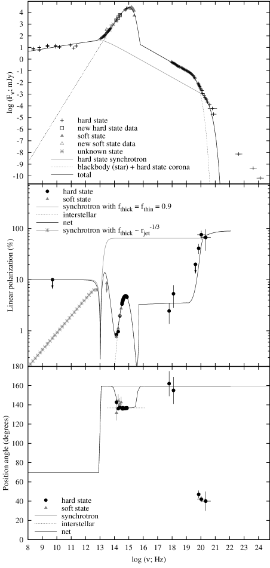
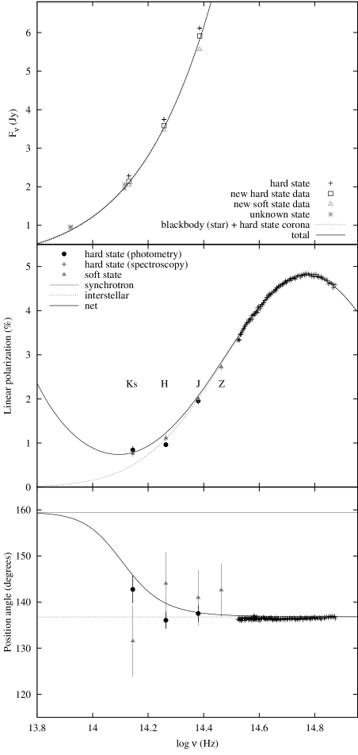
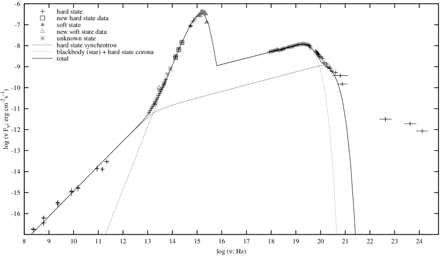
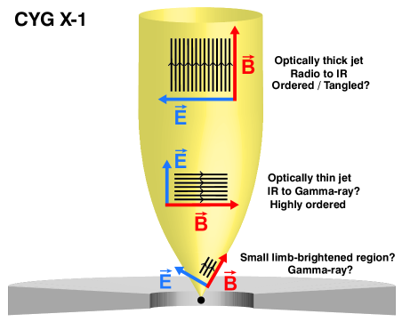

الاستقطاب متعدد الأطوال الموجية لـ Cygnus X–1
الملخص
توجد قياسات استقطاب للميكروكوازار Cygnus X–1 عند ترددات -ray، والأشعة السينية، وفوق البنفسجية، والبصرية، والراديوية. وقد ثبت أن انبعاث -ray مستقطب خطياً بدرجة عالية. نقدم هنا بيانات استقطابية جديدة في نطاق الأشعة تحت الحمراء لـ Cygnus X–1، التقطت باستخدام Gran Telescopio Canarias ذي القطر 10.4-m وWilliam Herschel Telescope ذي القطر 4.2-m. ونبين أن طيف الفيض عريض النطاق، من الراديو إلى -ray، وطيف الاستقطاب في الحالة الصلبة يتوافقان إلى حد كبير مع نموذج ظاهراتي بسيط لنفاثة سنكروترونية شديدة الاستقطاب، وهالة كومبتونية غير مستقطبة، ومكون غبار بين نجمي متوسط الاستقطاب. في هذا النموذج، يكون منشأ استقطاب -ray والأشعة السينية وبعض استقطاب الأشعة تحت الحمراء هو قانون القدرة السنكروتروني الرقيق بصرياً الصادر من المناطق الداخلية للنفاثة. ويتطلب النموذج أن يكون المجال المغناطيسي في هذه المنطقة عالي الانتظام وعمودياً على محور النفاثة الراديوية المحلولة. ويختلف ذلك عن دراسات بعض ثنائيات الأشعة السينية الأخرى، التي يكون فيها المجال المغناطيسي مضطرباً ومتغيراً ومصطفاً مع محور النفاثة. يستطيع النموذج تفسير قوة الاستقطاب التقريبية وزاوية الموضع عند جميع الأطوال الموجية، بما في ذلك استقطاب الأشعة السينية المرصود (3–5 keV)، باستثناء زاوية الموضع المرصودة لاستقطاب -ray، التي تختلف عن النموذج بمقدار . وقد أظهرت نمذجة عددية سابقة أن الطيف السنكروتروني المنحني يمكن أن ينتج إزاحة في زاوية الموضع بمقدار ، وقد يفسر ذلك هذه النتيجة.
keywords:
التراكم، أقراص التراكم، فيزياء الثقوب السوداء، ISM: النفاثات والتدفقات الخارجة، الأشعة السينية: الثنائيات1 مقدمة
ثنائيات الأشعة السينية هي أنظمة ثنائية يراكم فيها جسم مدمج، سواء كان ثقباً أسود أم نجماً نيوترونياً، مادة من نجم مرافق. وقد دُرست خصائص استقطاب الانبعاث من ثنائيات الأشعة السينية ذات الثقوب السوداء (BHXBs) جيداً عند الترددات الراديوية (انظر Fender, 2006, للمراجعة)، وحظيت مؤخراً ببعض الاهتمام عند الترددات البصرية وترددات الأشعة تحت الحمراء (IR). ففي النطاق البصري، يمكن أن يتعدل الاستقطاب الناتج عن تشتت الانبعاث الحراري غير المستقطب ذاتياً وفق الفترة المدارية، مما يضع قيوداً على الخصائص الفيزيائية والهندسية للنظام (Dolan & Tapia, 1989; Gliozzi et al., 1998). أما في الراديو، وفي بعض الحالات عند الترددات البصرية/تحت الحمراء، فقد ينشأ الاستقطاب المتغير من انبعاث سنكروتروني صادر عن النفاثات المنطلقة عبر عملية التراكم على الثقب الأسود أو النجم النيوتروني في ثنائيات الأشعة السينية (Hannikainen et al., 2000; Brocksopp et al., 2007; Shahbaz et al., 2008; Russell & Fender, 2008; Russell et al., 2011b).
قبل أكثر من ثلاثين عاماً، أُجريت بضع قياسات لاستقطاب ثنائيات الأشعة السينية عند طاقات الأشعة السينية باستخدام مقاييس الاستقطاب البلورية بطريقة Bragg على متن القمر الصناعي OSO 8. وقد قيس الاستقطاب الخطي للثنائي عالي الكتلة للأشعة السينية (HMXB) والميكروكوازار Cygnus X–1 بقيمة 2–5 في المائة عند 2.5–5.2 keV (كان مستوى الثقة 3.9 عند 2.6 keV؛ Long, Chanan & Novick, 1980). ومنذ ذلك الحين، لم يمتلك أي كاشف للأشعة السينية القدرة على قياس خصائص استقطاب ثنائيات الأشعة السينية بدقة أكبر. وفي الآونة الأخيرة استُخدم القمر الصناعي INTEGRAL، بتقنيات جديدة، لتقدير استقطاب Crab (Dean et al., 2008) وCygnus X–1 (Laurent et al., 2011; Jourdain et al., 2012) وبعض انفجارات -ray (GRBs؛ Götz et al., 2009, 2013) عند طاقات الأشعة السينية الصلبة–-ray. ووجد أن استقطاب -ray لـ Cyg X–1 عال جداً، إذ بلغ في المائة عند 0.4–2 MeV باستخدام أداة IBIS على متن INTEGRAL (Laurent et al., 2011)، ثم تأكد لاحقاً باستخدام أداة SPI بقيمة في المائة عند 0.23–0.85 MeV (Jourdain et al., 2012). والآلية الوحيدة القابلة للتطبيق لإنتاج استقطاب مرتفع كهذا عند هذه الطاقات هي الانبعاث السنكروتروني الرقيق بصرياً، وقد قيل إن الإلكترونات عالية الطاقة في النفاثة هي أصل الاستقطاب (Laurent et al., 2011; Jourdain et al., 2012). وأكدت النمذجة الطيفية التفصيلية لانبعاث keV–MeV (مثلاً McConnell et al., 2002; Zdziarski, Lubiński & Sikora, 2012; Del Santo et al., 2013) وانبعاث keV–GeV (Malyshev, Zdziarski & Chernyakova, 2013; Zdziarski, Pjanka & Sikora, 2013) من Cyg X–1 وجود ذيل MeV في الحالة الصلبة، ويمكن أن يكون سببه إما كومبتنة هجينة أو مكون سنكروتروني. وهنا نعتمد تصنيفات الحالة في Belloni (2010). وإذا كانت المستويات العالية من الاستقطاب عند 0.2–2 MeV راسخة، فإن السنكروترون هو الآلية المفضلة، وتتسق نماذج النفاثة مع كون ذيل MeV امتداد الطاقة العالية لقانون القدرة السنكروتروني الرقيق بصرياً الممتد من أطوال موجية تحت حمراء (Rahoui et al., 2011; Zdziarski et al., 2012, 2013; Malyshev et al., 2013). وبديلاً من ذلك، اقتُرح أن تدفق تراكم حار يمكنه أيضاً إنتاج انبعاث سنكروتروني شديد الاستقطاب عند طاقات MeV؛ ويتطلب ذلك حركة أحادية البعد للإلكترونات على امتداد خطوط مجال مغناطيسي عالية الانتظام في المناطق الداخلية للتدفق الحار (Veledina, Poutanen & Vurm, 2013). وفي هذه الحالة، يفترض أن منطقة صغيرة من التدفق الحار المتراكم من اتجاه مفضل يجب أن تهيمن على انبعاث MeV، لأن خطوط المجال التي تخترق التدفق من جميع أجزاء قرص التراكم الداخلي ستكون ذات اتجاهات مختلفة.
الانبعاث السنكروتروني الرقيق بصرياً مستقطب في جوهره. فإذا كان المجال المغناطيسي المحلي في منطقة الانبعاث منتظماً (منظماً)، يُرصد استقطاب خطي صاف. وإذا كان المجال متشابكاً، فإن الزوايا المختلفة للضوء المستقطب تثبط الاستقطاب المتوسط المرصود. وتبلغ قوة الاستقطاب العظمى –80 في المائة في حالة مجال منتظم تماماً (مثلاً Rybicki & Lightman, 1979; Björnsson & Blumenthal, 1982)، وتعتمد فقط على درجة انتظام المجال وعلى توزيع طاقة جماعة الإلكترونات (انظر أيضاً القسم 3). وعندما يكون الانبعاث الراديوي من BHXBs متسقاً مع سنكروترون رقيق بصرياً (ويحدث ذلك عادة أثناء انتقالات حالات الأشعة السينية)، تُرصد هذه البصمة الاستقطابية غالباً عند مستويات مرتفعة نسبياً؛ في المائة (مثلاً Hannikainen et al., 2000; Fender et al., 2002; Brocksopp et al., 2007; Roberts et al., 2008; Miller-Jones et al., 2008; Curran et al., 2013)، ويصدر الانبعاث هنا من قذائف نفاثية منفصلة أو من تفاعلات مع الوسط بين النجمي (ISM)، وغالباً ما تُحل في الصور الراديوية. وتكون زاوية موضع الاستقطاب (PA) في هذه القذائف غالباً (وليس دائماً) موازية تقريباً لمحور النفاثة الراديوية المحلولة، مما يدل على أن المجال الكهربائي مواز لمحور النفاثة وأن المجال المغناطيسي متعامد معه. وقد ينتج ذلك من انضغاط خطوط مجال مغناطيسي متشابكة في صدمات لاحقة في التدفق أو من التصادم مع مناطق كثيفة من ISM، مما يؤدي إلى مجال عرضي جزئياً منتظم.
من المعروف أن النفاثات المدمجة المخروطية تنتج طيفاً مسطحاً أو مقلوباً قليلاً من الترددات الراديوية إلى ترددات الأشعة تحت الحمراء في BHXBs (، حيث ؛ Fender et al., 2000, 2001; Corbel & Fender, 2002; Migliari et al., 2007; Gallo et al., 2007; Rahoui et al., 2011; Gandhi et al., 2011; Russell et al., 2013b). وتختلف هذه النفاثات المتواصلة الإطلاق عن القذائف المنفصلة؛ إذ تتألف أطيافها من مكونات سنكروترونية متداخلة وممتصة ذاتياً (سميكة بصرياً) تنشأ من توزيعات إلكترونات ذات طاقات مختلفة تنتشر على امتداد النفاثة، على نحو يشبه ما يوجد في النوى المجرية النشطة (AGN؛ Blandford & Konigl, 1979; Kaiser, 2006). وفي BHXBs تنتج هذه النفاثات المدمجة عندما يكون المصدر في حالة الأشعة السينية الصلبة (مثلاً Gallo, Fender & Pooley, 2003). وقد رُصد استقطاب خطي من هذا الطيف المسطح السميك بصرياً عند مستوى بضع في المائة عند الترددات الراديوية في عدد قليل من BHXBs (مثلاً Gallo et al., 2004; Brocksopp et al., 2013). وعند تردد ما، يُعد عموماً واقعاً في نطاق الأشعة تحت الحمراء، ينكسر هذا الطيف السنكروتروني إلى طيف رقيق بصرياً، بحيث . وقد جرى تحديد وعزل طيف قانون القدرة للانبعاث الرقيق بصرياً في عدة BHXBs في نطاق الأشعة تحت الحمراء/البصري (مثلاً Hynes et al., 2003, 2006; Homan et al., 2005; Kalemci et al., 2005; Chaty, Dubus & Raichoor, 2011)، كما كُشف الانكسار نفسه في عدد قليل من BHXBs في الأشعة تحت الحمراء المتوسطة (Corbel & Fender, 2002; Rahoui et al., 2011; Gandhi et al., 2011; Russell et al., 2013a).
حتى الآن، حاولت دراسات قليلة كشف البصمة الاستقطابية للانبعاث السنكروتروني الرقيق بصرياً من النفاثات المدمجة الموجودة في الحالة الصلبة في BHXBs. وينشأ هذا الانبعاث قرب قاعدة النفاثة، في منطقة يرجح أنها مرتبطة ببداية تسارع الجسيمات في النفاثة (مثلاً Polko, Meier & Markoff, 2010). وقد يكون الاستقطاب المشاهد من هذه المنطقة ذا مستوى أعلى من الانتظام مقارنة بمناطق أبعد في النفاثة، لأن المجال قد يحافظ على درجة عالية من الانتظام عبر منطقة انبعاث أصغر (Blandford & Konigl, 1979). لذلك توفر القياسات الاستقطابية لقانون القدرة الرقيق بصرياً أداة قوية لكشف طبيعة بنية المجال المغناطيسي في هذه المنطقة، وهو أمر مهم لنماذج ومحاكاة إنتاج النفاثات. وفي النطاق البصري/تحت الأحمر لثنائيات الأشعة السينية، تهيمن غالباً مكونات أخرى مثل قرص التراكم والنجم المرافق، فتثبط أي مساهمة سنكروترونية في الاستقطاب، لكن عندما يسهم السنكروترون بقوة، فقد رُصد استقطاب ذاتي (مثلاً Dubus & Chaty, 2006; Shahbaz et al., 2008; Russell & Fender, 2008; Russell et al., 2011b; Chaty et al., 2011). ويكون الاستقطاب الخطي الكسري (FLP) في حدود –10 في المائة، مع دلائل على تغيرات سريعة في بعض المصادر على مقاييس زمنية من ثوان إلى دقائق. وتكون PA عادة متعامدة تقريباً مع محور النفاثة الراديوية المحلولة عندما تكون هذه الزاوية معروفة، مما يعني أن المجال المغناطيسي مواز لمحور النفاثة. وتتسق الرصود حتى الآن مع هندسة مجال مغناطيسي متغيرة يغلب عليها التشابك، مع خطوط مجال موجهة تفضيلياً على امتداد محور النفاثة.
نقدم هنا قياسات استقطاب جديدة عالية الدقة في NIR لـ Cyg X–1، وهو ثنائي أشعة سينية نشط باستمرار ومعروف بإطلاق نفاثة قوية (Gallo et al., 2005; Russell et al., 2007). ونجمع توزيعات الطاقة الطيفية للفيض (SEDs) الأرشيفية وجميع قياسات الاستقطاب المنشورة للمصدر حتى الآن، ونحاول نمذجة طيف الفيض متعدد الأطوال الموجية وطيف FLP وطيف PA على نحو متسق ذاتياً. يصف القسم 2 جمع البيانات ومعالجتها، وتعرض النموذج والنتائج في القسم 3. وترد مناقشة في القسم 4، بما في ذلك تنبؤات لاكتشافات مستقبلية لاستقطاب الأشعة السينية في ثنائيات الأشعة السينية. وتُلخص الاستنتاجات في القسم 5.
| Target | UT Date start | exp. time | PWVa | Nature |
|---|---|---|---|---|
| HD 184827 | 2013-08-06 02:18 | 73 s | 12.8 | zero pol. |
| Cyg X–1 | 2013-08-06 02:54 | 33291 s | 13.1 | OB # 1 |
| MWC 349 | 2013-08-06 04:06 | 73 s | 12.0 | polarized |
| HD 184827 | 2013-10-04 23:55 | 73 s | 4.2 | zero pol. |
| Cyg X–1 | 2013-10-05 00:19 | 33291 s | 5.2 | OB # 2 |
| MWC 349 | 2013-10-05 01:32 | 73 s | 6.8 | polarized |
| Cyg X–1 | 2013-10-05 22:53 | 33291 s | 6.1 | OB # 3 |
| HD 184827 | 2013-10-06 00:11 | 73 s | 4.6 | zero pol. |
| MWC 349 | 2013-10-06 00:37 | 73 s | 6.4 | polarized |
aPWV هو بخار الماء القابل للتكاثف (mm)
| OB | Stokes | Stokes | Flux (Jy) |
|---|---|---|---|
| # 1 | 0.0101 0.0258 | -0.0126 0.0276 | 1.073a |
| # 2 | 0.0203 0.0723 | -0.0093 0.0601 | 0.34 |
| # 3 | -0.0186 0.0367 | 0.0002 0.0350 | 0.33 |
| Average | 0.0039 0.0284 | -0.0072 0.0249 |
aيرجح أن يكون هذا الفيض غير دقيق بسبب قيمة PWV الأسوأ في هذا التاريخ.
| Date | UT start–end | Airmass | Filters | Modea |
|---|---|---|---|---|
| 2010-06-18 | 03:51–04:24 | , , | ROT | |
| 2013-09-13 | 02:35–04:10 | 2.1–5.0 | , , | HWP |
| 2013-09-15 | 02:28–03:05 | 2.1–2.7 | HWP |
aROT هي طريقة تدوير الكاميرا بمقدار ، وHWP هي طريقة استخدام صفيحة نصف الموجة في LIRIS.
2 جمع البيانات
2.1 رصود الاستقطاب في الأشعة تحت الحمراء المتوسطة باستخدام Gran Telescopio Canarias
أُخذت رصود CanariCam الاستقطابية لـ Cyg X–1 خلال 2013 أغسطس وأكتوبر باستخدام Gran Telescopio Canarias (GTC) في La Palma. استخدمنا منشور Wollaston، ومؤخر نصف الموجة (صفيحة نصف الموجة، HWP)، ومرشح السيليكات Si-4 المتمركز عند 10.3 m (عرض النطاق 0.9 m) للحصول على قياس استقطاب خطي مزدوج الحزمة لأهدافنا. رصدنا Cyg X–1 لمدة إجمالية قدرها 131 min، بزاوية تقطيع مقدارها 90 درجة، وإزاحة تقطيع قدرها 8 ثانية قوسية، وزاوية إيماء درجة، وإزاحة إيماء قدرها 8 ثانية قوسية. ولقياس الاستقطاب الآلي، رُصد نجم معياري غير مستقطب HD 184827. كما رصدنا النجم المستقطب MWC 349 لتحديد إزاحة زاوية الموضع. وأُخذت رصود المعايرة هذه في كل مرة رُصد فيها Cyg X–1. قيس مقدار بخار الماء القابل للتكاثف (PWV) في الغلاف الجوي بالملليمترات بواسطة مرقاب PWV الآني في IAC أثناء كل رصد. وقد أُجريت رصود أكتوبر تحت ظروف PWV أفضل بكثير مقارنة برصود أغسطس (انظر الجدول 1 للاطلاع على سجل الرصود).
في نمط قياس الاستقطاب، تدور HWP آلياً بين زوايا الموضع الأربع: 0∘، و45∘، و22.5∘، و67.5∘. وتتزامن دورة HWP مع التقطيع والإيماء بحيث يحتوي مكعب الصورة الخام النهائي على عدة امتدادات، يقابل كل منها زاوية لصفيحة الموجة. وتحدد معاملات Stokes لمصدر ما من مزيج الصور العادية وغير العادية لكل قيمة من قيم زاوية HWP. خُفضت البيانات باستخدام مجموعة مؤتمتة من نصوص pyraf أُنشئت خصيصاً لقياس استقطاب المصادر النقطية، ووفرها فريق العمليات العلمية في GTC. وتعد pyraf لغة لتشغيل مهام iraf11 1 توزع iraf بواسطة National Optical Astronomy Observatory، الذي تديره Association of Universities for Research in Astronomy, Inc. بموجب اتفاق تعاوني مع National Science Foundation. http://iraf.noao.edu/ مبنية على لغة البرمجة النصية python (Greenfield & White, 2000). وأُجري القياس الضوئي الفتحي على الهدف ونجوم المعايرة باستخدام فتحة ثابتة نصف قطرها 5 بكسل. وحُددت معاملات Stokes باستخدام الصيغ الموصوفة في Tinbergen (2005). وقد قورنت نتائج هذه النصوص مع حزمة Starlink22 2 http://starlink.jach.hawaii.edu/ المسماة POLPACK، وكانت تنتج النتائج نفسها ضمن حدود الأخطاء.
طُرحت قيمتا Stokes الآليتان و المحددتان باستخدام النجم غير المستقطب من قيم Cyg X–1 المنفردة، و، في كل تاريخ. ثم جُمعت هذه القيم المصححة من التواريخ الثلاثة لإعطاء و، وهو ما يعادل استقطاباً مقداره في المائة وزاوية موضع مقدارها (انظر الجدول 2 لنتائج الاستقطاب). والحد الأعلى هو في المائة.
بالنسبة إلى الرصود الثلاثة لـ Cyg X–1، قسنا نسبة الشدة الكلية بالنسبة إلى النجم المعياري في منتصف الأشعة تحت الحمراء HD184827 (Cohen et al., 1992). وتبلغ كثافة الفيض للمعيار في مرشح Si-4 (10.3 m) 10.925 Jy، وكانت كثافات فيض Cyg X–1 هي 1.073 Jy، و0.34 Jy، و0.33 Jy لـ كتل الرصد الثلاث (OBs) #1، و#2، و#3، على التوالي. وتتشابه كثافة الفيض كثيراً لكتلتي الرصد #2 و#3، لكنها تختلف بعامل قدره 3 لكتلة الرصد #1، ويرجح جداً أن يكون ذلك بسبب PWV الأسوأ بكثير في هذا التاريخ (انظر الجدول 1). لذلك نستبعد قيمة كثافة الفيض هذه من التحليل التالي.
| Waveband | (; Hz) | Reference |
|---|---|---|
| 235–610 MHz | 8.37–8.79 | Pandey et al. (2007) |
| 2.3–221 GHz | 9.36–11.34 | Fender et al. (2000) |
| 5.5–27 ma | 13.05–13.73 | Rahoui et al. (2011)b |
| 5–18 m | 13.22–13.78 | Mirabel et al. (1996) |
| 2.3–10 m | 13.48–14.12 | Persi et al. (1980) |
| 1.2–2.2 m | 14.13–14.39 | Skrutskie et al. (2006) |
| 1.2–2.2 m | 14.13–14.39 | This paper |
| 0.44–0.55 m | 14.74–14.83 | Brocksopp et al. (1999) |
| 0.37 m | 14.91 | Bregman et al. (1973) |
| 0.122–0.56 ma,c | 14.73–15.39 | Caballero-Nieves et al. (2009) |
| 3.5–160 keVa | 17.93–19.59 | Rahoui et al. (2011)b |
| 260–5400 keVa | 19.80–21.12 | Zdziarski et al. (2012) |
| 0.1–10 GeVa | 22.38–24.37 | Malyshev et al. (2013) |
aتتضمن بيانات طيفية. bاستخدمت بيانات رصد Spitzer 1 كما عُرفت في Rahoui et al. (2011)، لأن المصدر كان في الحالة الصلبة وكانت النفاثة موجودة. cأُخذت بيانات UV عندما كان المصدر في حالة لينة.
2.2 رصود الاستقطاب في NIR باستخدام William Herschel Telescope
رصدنا Cyg X–1 باستخدام المطياف تحت الأحمر ذي الشق الطويل والمتوسط الاستبانة (LIRIS) في نمط قياس الاستقطاب التصويري على William Herschel Telescope (WHT) ذي القطر 4.2-m في Observatorio del Roque de los Muchachos، La Palma، إسبانيا. أُخذت البيانات في 2010 يونيو 18، و2013 سبتمبر 13، و15 (انظر الجدول 3 لسجل الرصود). وكانت الظروف جيدة في جميع التواريخ، مع وجود غيوم رقيقة فقط في 2013 سبتمبر 13. وفي 2010 كانت الكتلة الهوائية ممتازة، ، وفي 2013 تراوحت الكتلة الهوائية بين 2.1 و5.0. وأُخذت التعريضات بنمط ترنح من خمس نقاط، كل على حدة في مرشحات و و و، واستخدم مرشح كثافة حيادية بسبب السطوع العالي للمصدر. ويقسم منشور Wollaston الضوء الوارد إلى أربع صور متزامنة، واحدة عند كل من زوايا الاستقطاب الأربع: 0∘، و45∘، و90∘، و135∘. وبالنسبة إلى رصود 2010، أُجري نصف الرصود ومدور التلسكوب عند والنصف الآخر عند ، لتصحيح عوامل النفاذ النسبية للشعاعين العادي وغير العادي لكل Wollaston (انظر Alves et al., 2011; Zapatero Osorio et al., 2011). وفي 2013، استفدنا من صفيحة نصف الموجة اللا لونية الجديدة المتاحة حديثاً في LIRIS. ويضمن استخدام صفيحة نصف الموجة أن دوران الكاميرا لم يعد ضرورياً، كما يوفر وقت الرصد لأن دوران الكاميرا يزيد زمن التحضير زيادة كبيرة.
أُجري اختزال البيانات باستخدام حزمة lirisdr التي طورها فريق LIRIS في بيئة iraf (للتفاصيل، انظر Alves et al., 2011). ثم أُجري القياس الضوئي الفتحي على الصور المدمجة الناتجة، وقيس معاملا Stokes المطبعان و، وكذلك FLP وPA، باستخدام المعادلات (11–13) في Alves et al. (2011) لبيانات 2010. وحُسبت أخطاء FLP وPA باستخدام روتين Monte Carlo ينشر الأخطاء المرتبطة بالعد الخام عند كل زاوية استقطاب. وبالنسبة إلى بيانات 2013، اعتمدت المعادلات التي عرضها Pereyra & Acosta-Pulido (قيد الإعداد) والتي تنطبق على بيانات صفيحة نصف الموجة (وهي معادلات شبه متطابقة، باستثناء تغيرات الإشارة في و). ومن المعروف أن الاستقطاب الآلي في LIRIS صغير جداً؛ في المائة (Alves et al., 2011). غير أننا وجدنا في النطاقين و-bands، حيث يتفق FLP جيداً جداً مع المتوقع من الغبار بين النجمي في بيانات 2010 (انظر القسم 3.3)، أن PA المقاسة مزاحة عن PA البصرية المعروفة للاستقطاب الناتج عن الغبار بين النجمي بمقدار لبيانات 2010. والسبب الأرجح لهذا التباين هو خطأ صغير ناشئ عن أن مدور التلسكوب لم يكن موجهاً تماماً عند و، بل كان منزاحاً منهجياً ببضع درجات. لذلك نطبق تصحيحاً منهجياً قدره على قيم PA المقاسة في النطاقات و و-bands لبيانات 2010.
اختلفت قيم PA في 2013 عن PA الغبارية البصرية بما يصل إلى . ووجد Pereyra & Acosta-Pulido (قيد الإعداد) أن PA للنجوم المعيارية المستقطبة اختلفت عن قيم PA البصرية المعروفة لها بما يصل إلى (انظر جدوليهم 1 و2)، وقد يكون ذلك بسبب انزياح زاوية HWP عن زاوية الكاميرا بهذا المقدار الصغير. لذلك نضيف إلى أخطاء PA لبيانات 2013 التي استُخدمت فيها HWP. وبالنسبة إلى مجموعة بيانات 2013، تمكنا أيضاً من قياس FLP لنجمين حقليين. ولم يكن ذلك ممكناً في 2010 لأن دوران الكاميرا يؤدي إلى رصد حقل صغير 1’ 1’ عند زاويتي الدوران، في حين لا تدير صفيحة نصف الموجة الكاميرا، ولذلك يمكن قياس FLP في الحقل الكامل 4’ 1’. قسنا استقطاب نجمين حقليين ووجدنا أنهما مستقطبان، بقيم FLP أكبر بعامل 1.06–1.40 من Cyg X–1 في المرشحات الأربعة كلها. واتفقت PA لاستقطاب النجمين الحقليين ضمن مع القيمة البصرية بين النجمية لـ Cyg X–1، مما يشير إلى أن النجوم الحقلية مستقطبة أيضاً بفعل الغبار بين النجمي في الاتجاه نفسه مثل Cyg X–1. والنجوم الحقلية أخفت، وأخطاء استقطابها أكبر، من أخطاء Cyg X–1، وقد تختلف PA البصرية الدقيقة الناتجة عن الغبار من نجم إلى آخر.
باستخدام نجوم حقلية من Two Micron All Sky Survey (2MASS؛ Skrutskie et al., 2006)، قسنا مقادير و و لـ Cyg X–1 في 2010، وهي في المتوسط أخفت بمقدار 0.05 mag فقط من المقادير المدرجة في 2MASS لثنائي الأشعة السينية. وفي 2013 كانت المقادير و و (لم نتمكن من معايرة فيض بيانات النطاق -band لأنه غير مدرج في 2MASS)؛ أي أخفت في المتوسط بمقدار 0.10 mag من مقادير 2MASS. وأُنتجت أيضاً منحنيات ضوئية من كل من التعريضات المنفردة في 2010 عندما كانت الظروف أكثر ملاءمة، ووجدنا أن المصدر متغير ذاتياً على مقاييس زمنية قصيرة في IR. وقد قسنا الجذر المتوسط التربيعي الكسري ليكون 4.6 في المائة في ، و4.3 في المائة في ، و4.9 في المائة في النطاق -band. واختلفت الاستبانة الزمنية بين المرشحات، لذلك جمعنا البيانات في صناديق بحيث تكون الاستبانة الزمنية 16 ثانية في جميع المرشحات، وحصلنا على قيم rms مقدارها في المائة في ، و في المائة في ، و في المائة في النطاق -band (ورُصد التغير عند مستويات ثقة و و في المرشحات الثلاثة، على التوالي).
| Waveband | log(; Hz) | MJD | X-ray | FLP (%) | FLP (%) | PA (∘) | PA (∘) | Ref. |
|---|---|---|---|---|---|---|---|---|
| state | Observed | Model | Observed | Model | ||||
| 5 GHz | 9.70 | 49917 | hard | 9.9 | – | 69.5 | 1 | |
| 10.3 m (Si-4-band) | 13.46 | 56510, 56570 | soft | 0.00 | – | 136.8 | 2 | |
| 2.16 m (-band) | 14.14 | 55365 | hard | 0.79 | 145.8 | 2 | ||
| 2.16 m (-band) | 14.14 | 56548 | soft | 0.51 | 136.8 | 2 | ||
| 1.65 m (-band) | 14.26 | 55365 | hard | 1.23 | 139.7 | 2 | ||
| 1.65 m (-band) | 14.26 | 56548 | soft | 1.10 | 136.8 | 2 | ||
| 1.25 m (-band) | 14.38 | 55365 | hard | 2.07 | 137.7 | 2 | ||
| 1.25 m (-band) | 14.38 | 56548 | soft | 2.00 | 136.8 | 2 | ||
| 1.03 m (-band) | 14.46 | 56550 | soft | 2.79 | 136.8 | 2 | ||
| 0.64 m (-band) | 14.67 | 47039–44, 47337–43 | unknown | 4.55 | 136.9 | 3 | ||
| 0.55 m (-band) | 14.74 | 47039–44, 47337–43 | unknown | 4.78 | 136.9 | 3 | ||
| 0.44 m (-band) | 14.83 | 47039–44, 47337–43 | unknown | 4.70 | 136.9 | 3 | ||
| 0.37 m (-band) | 14.91 | 42304–16 | unknown | 4.27 | 136.8 | 4 | ||
| 0.40–0.90 ma | 14.52–14.87 | 53951, 53955 | hard | 3.3–4.8 | 3.4–4.5 | 135.9–137.1 | 137.0 | 5 |
| 2.6 keV | 17.80 | 42724–43457b | hard | 3.4 | 159.5 | 6 | ||
| 5.2 keV | 18.10 | 42724–43457b | hard | 3.5 | 159.5 | 6 | ||
| 130–230 keV | 19.50–19.75 | 52797–55184c | hard | 5–11 | – | 159.5 | 7 | |
| 230–370 keV | 19.75–19.95 | 52797–55184c | hard | 11–32 | 159.5 | 7 | ||
| 230–850 keV | 19.75–20.31 | 52797–55184c | hard | 11–72 | 159.5 | 7 | ||
| 400–2000 keV | 19.99–20.68 | –d | hardd | 38–80 | 159.5 | 8 |
في العمودين الخامس والسابع تعطى أخطاء FLP وPA المرصودين عند مستوى 1 (أو، في حالة البيانات الضوئية البصرية، تمثل الانحراف المعياري للقيم المأخوذة على امتداد جميع الأطوار المدارية). أما بالنسبة إلى قيم النموذج في العمودين السادس والثامن، فيفترض نموذج الحالة اللينة عدم وجود مكون سنكروتروني نفاث في IR. aتتضمن بيانات طيفية. bاستخدمت ثلاث توجيهات على مدى ثلاث سنوات؛ وللتواريخ الدقيقة انظر Long et al. (1980). cاستخدمت تسع توجيهات على مدى ست سنوات؛ وللتواريخ الدقيقة انظر الجدول 1 في Jourdain et al. (2012). dأُخذت البيانات بين 2003 و2009 (لا تعطى تواريخ دقيقة). eتعطى القيمة الصحيحة لـ PA في Jourdain et al. (2012). المراجع: (1) Stirling et al. (2001); (2) هذا البحث; (3) Dolan (1992); (4) Nolt et al. (1975); (5) Nagae et al. (2009); (6) Long et al. (1980); (7) Jourdain et al. (2012); (8) Laurent et al. (2011).
2.3 جمع البيانات متعددة الأطوال الموجية
Cyg X–1 مصدر ساطع ومستمر ودُرس على نطاق واسع لعقود. ومن ثم فهو يملك واحداً من أفضل SEDs متعددة الأطوال الموجية عينةً بين ثنائيات الأشعة السينية، ممتداً عبر رتب مقدار في التردد، من النطاق الراديوي منخفض التردد MHz إلى نطاق -ray عالي الطاقة GeV. كما أُجريت قياسات استقطابية عند الطاقات الراديوية والبصرية وفوق البنفسجية والأشعة السينية و-ray. هنا نجمع بياناتنا الجديدة في mid-IR وNIR مع البيانات المنشورة سابقاً في الأدبيات. ويلخص الجدول 4 قياسات الفيض لـ Cyg X–1 التي جُمعت لهذا البحث، وترد جميع قياسات استقطاب المصدر في الجدول 5. وبالنسبة إلى كثير من القياسات، حُسب FLP وخطؤه بنشر الأخطاء المرتبطة بمعاملي Stokes و. لذلك نأخذ في الحسبان انحياز الاستقطاب (Wardle & Kronberg, 1974) للقياسات التي لم يؤخذ فيها ذلك مسبقاً. ويؤدي انحياز الاستقطاب إلى زيادة FLP المقدرة إذا كانت الأخطاء في و كبيرة (عادة بسبب انخفاض نسبة الإشارة إلى الضجيج؛ S/N)، لأن FLP كمية موجبة، بينما يمكن أن يكون و موجبين أو سالبين. والاستقطاب المصحح للانحياز هو ، حيث إن و هما FLP المقدرة باستخدام الصيغة القياسية وخطؤها بنشر الأخطاء في و. وبوجه عام تمتلك قياسات FLP المبلغ عنها S/N عالية، ووجد أن يساوي في المائة لجميع البيانات البصرية وUV وبيانات NIR الجديدة لدينا.
جُمعت البيانات خلال فترات كان فيها المصدر في حالة أشعة سينية صلبة (عندما كان ذلك معروفاً)، لأن هذا هو الوقت المتوقع فيه إنتاج النفاثات المدمجة. وبالنسبة إلى جميع البيانات المأخوذة في 1996 أو بعده، استُخدمت مراصد السماء كلها في الأشعة السينية التابعة لـ Rossi X-ray Timing Explorer (RXTE؛ Bradt, Rothschild & Swank, 1993) وMonitor of All-sky X-ray Image (MAXI؛ Matsuoka et al., 2009) لتصنيف حالة الأشعة السينية لـ Cyg X–1 في كل تاريخ، باستخدام مخطط التصنيف في Grinberg et al. (2013). ونجد أن Cyg X–1 كان في الحالة الصلبة عندما أُخذت بيانات NIR لدينا في 2010. غير أنه في 2013 كان Cyg X–1 في الحالة اللينة في جميع التواريخ التي حصلنا فيها على بيانات mid-IR وNIR. لذلك ننبه إلى أن النفاثة المدمجة قد لا تسهم في الاستقطاب في بيانات 2013 لأن المصدر لم يكن في الحالة الصلبة. وندرج أطياف فيض UV أُخذت أثناء حالة لينة، ولكن لأن المرافق غير المتغير يهيمن عند هذه الأطوال الموجية (الهالة والنفاثة أخفت بمقدار –3 رتب مقدار)، يمكننا إدراج قياسات الفيض هذه في SED لدينا. وصُححت البيانات الممتصة من الاحمرار باستخدام الانطفاء نحو المصدر، mag (Wu et al., 1982; Rahoui et al., 2011; Xiang et al., 2011)، وباعتماد قوانين الانطفاء في IR/البصري/UV لـ Cardelli, Clayton & Mathis (1989) وPei (1992) وChiar & Tielens (2006). وأُخذت أطياف الأشعة السينية وmid-IR غير الممتصة من Rahoui et al. (2011) (الرصد 1 كما عرفه المؤلفون، وكان المصدر خلاله في حالة صلبة)، وأُخذت بيانات الأشعة السينية و-ray غير الممتصة من Zdziarski et al. (2012) وMalyshev et al. (2013).


3 نموذج مبسط لفيض واستقطاب Cyg X–1 متعدد الأطوال الموجية
3.1 طيف الفيض
يعرض طيف كثافة الفيض عريض النطاق، من الراديو إلى -ray ()، لـ Cyg X–1 في الحالة الصلبة في اللوحة اليسرى العليا من الشكل 1، كما يعرض الشيء نفسه في الشكل 2 بوصفه SED (). ونعرض أيضاً بيانات الحالة اللينة في UV وIR على هيئة مثلثات رمادية. يهيمن النجم O العملاق فائق اللمعان على انبعاث IR/البصري/UV، ويمكن تقريبه بجسم أسود ذي درجة حرارة واحدة. وبينما تنتج النفاثة طيف السنكروترون الراديوي المسطح/المقلوب السميك بصرياً، أظهر Fender et al. (2000) أن هذا الطيف يمتد إلى أطوال موجية ملليمترية، ووجد Rahoui et al. (2011) دليلاً على انبعاث سنكروتروني متغير عند أطوال موجية في mid-IR. وتشمل النماذج عريضة النطاق المطبقة على بيانات Cyg X–1 (مثلاً Markoff, Nowak & Wilms, 2005; Nowak et al., 2011; Rahoui et al., 2011; Zdziarski, Lubiński & Sikora, 2012, 2013) عادة هالة كومبتونية يغلب أنها تهيمن على فيض الأشعة السينية، ونفاثة تهيمن على النطاق الراديوي–mm وقد تسهم إسهاماً مهماً في فيض IR والأشعة السينية و-ray.
نعتمد هنا نموذجاً مبسطاً، تمثيلياً، لنفاثة سنكروترونية، وجسم أسود من النجم المرافق، وهالة كومبتونية مقربة بقانون قدرة ذي قطع أسي. والهدف هو إعادة إنتاج الطيف المرصود تقريبياً بطريقة ظاهراتية، لاستخدامه طيف دخل لنموذج الاستقطاب الموصوف أدناه. وتتألف النفاثة من قانون قدرة مكسور يصف منطقتي الطيف السنكروتروني السميكة بصرياً والرقيقة بصرياً، مع بعض الانحناء عند تردد الانكسار الطيفي، (مثلاً Blandford & Konigl, 1979). وأجرى Rahoui et al. (2011) نمذجة طيفية لـ SEDs عريضة النطاق لـ Cyg X–1 شملت أطياف Spitzer في mid-IR، ورجحت ملاءماتهم وجود انكسار في طيف النفاثة عند Hz، مع امتداد قانون القدرة الرقيق بصرياً إلى ترددات أعلى. ولتفسير ذيل الطاقة العالية في طيف -ray ومستوى الاستقطاب العالي، قيل إن قانون القدرة السنكروتروني الرقيق بصرياً هذا يمتد إلى نطاق -ray (مثلاً Laurent et al., 2011; Rahoui et al., 2011; Jourdain et al., 2012). وقد اختبر ذلك حديثاً بتطبيق نماذج نفاثات على SED عريض النطاق لـ Cyg X–1 في الحالة الصلبة (Zdziarski et al., 2012; Malyshev et al., 2013; Zdziarski et al., 2013)، بما في ذلك قيود من اكتشافات جديدة لـ -ray عند طاقات GeV بواسطة FERMI (رُصد كل من فيض الحالة الصلبة المتوسط والتوهجات؛ Malyshev et al., 2013; Bodaghee et al., 2013). ويتسق طيف الفيض مع امتداد قانون القدرة السنكروتروني الرقيق بصرياً من النفاثة إلى طاقات -ray وتفسير ذيل MeV بقطع في ذلك النطاق، وهذا هو التفسير المفضل إذا كانت قياسات الاستقطاب العالية راسخة (Zdziarski et al., 2012, 2013; Malyshev et al., 2013).
لهذه النتائج آثار مباشرة في الاستقطاب المتوقع بوصفه دالة للتردد في SED الخاص بـ Cyg X–1، لأن خصائص استقطاب الانبعاث السنكروتروني الرقيق بصرياً مفهومة جيداً، مما يتيح لنا استخدام قياس الاستقطاب لاختبار هذه النماذج. وفيما يلي نقارن خصائص الاستقطاب عريضة النطاق المرصودة لـ Cyg X–1 بما هو متوقع من نفاثة سنكروترونية، يحدد نموذج تقريب طيف الفيض هنا طيفها (ومساهمتها في الفيض الكلي).
في البداية، اعتمدنا معاملات أفضل ملاءمة للنموذج التي أوردها Rahoui et al. (2011) لتفسير طيف النفاثة. ونجد أن النموذج يستطيع إعادة إنتاج بيانات الراديو–mm تقريبياً (نحن ندرج بيانات أكثر بكثير تغطي مجال تردد أوسع مقارنة بـ Rahoui et al., 2011, لكن بياناتنا ليست شبه متزامنة)؛ ويعكس تشتت البيانات التغير المرصود بعامل قدره بضع مرات في الفيض في الحالة الصلبة بسبب عدم تزامن البيانات. غير أن النموذج يخفض فيض mid-IR المتوقع عند Hz. ويأخذ Rahoui et al. (2011) ذلك في الحسبان بإدراج قانون قدرة إضافي، يدعى أنه إشعاع كبح من الريح النجمية للمرافق. ونعتمد معاملاً طيفياً أكثر انقلاباً للجزء السميك بصرياً ()، ونجد أن مكون إشعاع الكبح لم يعد مطلوباً. ويمكن تقريب بيانات الراديو إلى UV وذيل الطاقة العالية بواسطة مكون النفاثة والجسم الأسود من المرافق. وعلى الرغم من أن SED الراديو إلى mm لـ Cyg X–1 أظهر أنه مسطح تقريباً (Fender et al., 2000)، فإن المعامل الطيفي الراديوي المتوسط الذي شمل بيانات راديوية منخفضة التردد متزامنة وجد أنه (عند 0.6–15 GHz؛ Pandey et al., 2007). لذلك نفضل نموذجاً بلا مكون إشعاع كبح وبطيف نفاثة سميك بصرياً مقلوب. ويعرض نموذجنا في اللوحات العليا من الشكل 1.
يوصف طيف السنكروترون ذي قانون القدرة المكسور والقطع الأسي عند الطاقات العالية كما يأتي،
| (6) |
حيث إن ثوابت تطبيع. ويُعرَّف المعامل الطيفي الرقيق بصرياً بتوزيع طاقة الإلكترونات، . ثم نضيف حداً لإدخال انحناء بين قانوني القدرة السميك بصرياً والرقيق بصرياً،
| (10) |
ويكون طيف السنكروترون المنحني النهائي هو،
| (11) |
في نماذج النفاثات السنكروترونية، يمكن لعدة معاملات أن تغير مقدار الانحناء، مثل هيئة المجال المغناطيسي والانحرافات في كثافة الجسيمات النسبية قرب قاعدة النفاثة. لذلك لا نحسب الانحناء لأن هذه المعاملات لا يمكن قياسها، بل نختار قيمة لثابت الانحناء استناداً إلى مقدار الانحناء الذي يصف جيداً انكسار نفاثة GX 339–4، حيث يكون الانحناء واضحاً (Gandhi et al., 2011).
يصف جسم أسود بسيط (قانون Planck) النجم المرافق،
| (12) |
حيث إن هو ثابت Planck، و هو ثابت Boltzmann، و هي درجة حرارة الجسم الأسود. وتقرب الهالة الكومبتونية بقانون قدرة ذي قطع أسي عالي الطاقة عند ،
| (16) |
نأخذ حداً منخفض الطاقة لقانون القدرة هذا عند Hz، وأسفله يهيمن المرافق على الفيض على أي حال. وأخيراً، يكون الطيف الكلي هو مجموع السنكروترون والجسم الأسود والهالة الكومبتونية،
| (17) |
نرى من الشكل 1 أنه، كما هو متوقع، تهيمن النفاثة على طيف الحالة الصلبة الراديو–mm–mid-IR، ويصبح المرافق ألمع باعث في نطاق mid-IR–NIR–البصري–UV، وتهيمن الهالة على فيض الأشعة السينية، ويفسر طيف النفاثة ذيل MeV في -ray (عند Hz؛ انظر أيضاً Malzac, Belmont & Fabian, 2009; Laurent et al., 2011; Rahoui et al., 2011; Jourdain et al., 2012). وقد بُرهن أن انبعاث كومبتون الذاتي السنكروتروني (SSC) و/أو التصعيد الكومبتوني لانبعاث الجسم الأسود النجمي يمكن أن يفسر فيض GeV (– Hz) في الحالة الصلبة (Malyshev et al., 2013; Zdziarski et al., 2013). وبما أنه لم تجر أي قياسات لاستقطاب GeV، ويبدو أن المكون الباعث في GeV لا يهيمن عند طاقات أدنى من نطاق GeV، فلا حاجة إلى إدراج مكون إضافي في نموذجنا عند طاقات GeV.

3.2 طيف الاستقطاب
عالج Westfold (1959) أولاً خصائص الاستقطاب الخطي للانبعاث السنكروتروني الرقيق بصرياً من إلكترونات في مجال مغناطيسي منتظم. ومنذ ذلك الحين طورت عدة أعمال الحسابات ووسعتها لتشمل توزيعات طاقة إلكترونية بقانون قدرة ومجالات مغناطيسية غير منتظمة (مثلاً Ginzburg & Syrovatskii, 1965; Nordsieck, 1976). وقد اشتق Björnsson & Blumenthal (1982) الحالة العامة للانبعاث السنكروتروني الرقيق بصرياً من جماعة إلكترونات ذات توزيع طاقات اعتباطي وتشكيل مجال مغناطيسي اعتباطي. والاستقطاب الخطي المتوقع هنا هو (انظر أيضاً Rybicki & Lightman, 1979),
| (18) |
حيث يمثل انتظام المجال المغناطيسي، وتتراوح قيمه بين الصفر (غير منتظم، بلا اتجاه مجال صاف) والواحد (مجال منتظم ومصطف تماماً)، و هو توزيع طاقة الإلكترونات. وبالنسبة إلى انبعاث سنكروتروني رقيق بصرياً ذي معامل طيفي نموذجي ()، يكون الاستقطاب الأعظمي (لمجال مغناطيسي منتظم، أي ) هو في المائة. وإذا كان المعامل الطيفي أشد انحداراً فقد يكون الاستقطاب أعلى أيضاً، إذ يبلغ في المائة لـ .
بالنسبة إلى مصدر سنكروتروني متجانس له توزيع طاقات إلكترونية بقانون قدرة، يكون FLP مستقلاً عن التردد، لكن الانحناء في طيف طاقات الإلكترونات يمكن أن يؤدي إلى FLP معتمد على التردد (Björnsson, 1985). وفي البلازارات، يؤدي تراكب مكونات مجال مغناطيسي منتظمة وفوضوية إلى انحناء في SED واعتمادية ترددية للاستقطاب (انظر أيضاً، مثلاً Valtaoja et al., 1991; Barres de Almeida et al., 2010). وفي BHXBs، يتسق الطيف الرقيق بصرياً من النفاثة المدمجة مع قانون قدرة واحد عندما يقاس جيداً (مثلاً Hynes et al., 2003; Russell et al., 2013b)، بانحناء ضئيل، ويرجح أنه ينشأ من جماعة واحدة من الإلكترونات ذات توزيع طاقة بقانون قدرة. لكن يوجد انحناء عند القطع عالي الطاقة، لذلك نتوقع تغيراً في FLP عند أعلى الطاقات. وفوق تردد القطع عالي الطاقة،
| (19) |
حيث إن هو المعامل الطيفي المعرف بواسطة . وتمتلك الأشعة السنكروترونية السميكة بصرياً (الممتصة) طيف فيض لتوزيع إلكتروني واحد، ويتوقع أن تكون أقل استقطاباً من السنكروترون الرقيق بصرياً (مثلاً Blandford et al., 2002),
| (20) |
مع زاوية موضع تختلف بمقدار عن زاوية استقطاب السنكروترون الرقيق بصرياً (انظر أيضاً Aller, 1970; Jones & O’Dell, 1977; Rudnick et al., 1978). ويبلغ الاستقطاب الأعظمي من هذا الطيف في المائة لـ (). وإذا ظل مستوى انتظام المجال المغناطيسي ثابتاً على امتداد طول النفاثة، مع PA ثابتة، فقد تصف المعادلة (9) الاستقطاب المتوقع من طيف نفاثة مسطح/مقلوب وسميك بصرياً مؤلف من أطياف سنكروترونية متداخلة. أما إذا تغير الانتظام أو تغيرت PA مع المسافة من قاعدة النفاثة (مثلاً في الحقول الحلزونية)، فستتغير خصائص الاستقطاب بدلالة التردد في الطيف السميك بصرياً. نطبق المعادلة (9) على بيانات Cyg X–1 كي نستطيع التنبؤ بـ FLP وPA للطيف السميك بصرياً في حالة ثبات انتظام المجال المغناطيسي وPA على امتداد النفاثة. وننظر أيضاً في نفاثة يتغير فيها انتظام المجال مع المسافة على امتداد النفاثة. وتقع منطقة الانبعاث في النفاثات القياسية ذات الطيف المسطح على مسافة من قاعدة النفاثة تتناسب عكسياً تقريباً مع تردد الانبعاث، (Blandford & Konigl, 1979). لذلك، إذا أصبح المجال المغناطيسي أكثر تشابكاً على امتداد طول النفاثة بحيث يكون مثلاً، فإن الاستقطاب سينخفض سريعاً من انكسار النفاثة إلى الترددات الأدنى، وسيغدو ضئيلاً في نطاق mm–الراديو. وننظر في قيم مختلفة لـ ، حيث
| (21) |
في الطيف السنكروتروني السميك بصرياً. هنا يمثل الدليل الذي يصف اعتماد انتظام المجال المغناطيسي على المسافة على امتداد النفاثة، مع دلالة على انتظام مجال ثابت. ومن ثم فإن مقارنة رصدياً مع المعتمد على التردد تختبر اعتماد انتظام المجال هذا على المسافة. وينبغي أن يبقى الحد الأقصى البالغ في المائة قائماً في جميع الحالات، وقد أشارت البيانات الراديوية لعدة مصادر إلى أن عادة بضع في المائة، مع تقارير تصل إلى –8 في المائة في بضعة مصادر (مثلاً Gallo et al., 2004; Brocksopp et al., 2013; Curran et al., 2013).
تستخدم المعادلات أعلاه للتنبؤ بـ FLP لطيف النفاثة. وعند ترددات IR/البصري/UV يهيمن النجم المرافق، الذي يتوقع بحكم تعريف الجسم الأسود أن يكون غير مستقطب. لذلك سينخفض FLP المرصود عند IR والترددات الأعلى مع تناقص مساهمة السنكروترون في الفيض الكلي بزيادة التردد. ومع ذلك فإن قيم FLP البصرية البالغة 3–5 في المائة موثقة جيداً في الأدبيات لـ Cyg X–1، ومعظم هذا FLP تقريباً له أصل في الغبار بين النجمي. وقد وُجد أن جزءاً صغيراً من FLP البصري يعود إلى التشتت في الريح النجمية للمرافق ويتغير على الفترة المدارية، إضافة إلى تغير طويل الأمد (عقود) قد يسببه تشتت بفعل ريح نجمية لا متناظرة ومتغيرة أو مادة محيطية أخرى (لدراسة مفصلة انظر Nagae et al., 2009). ونعتمد نموذج استقطاب الغبار بين النجمي لـ Serkowski, Mathewson & Ford (1975)، الذي لائم أطيافاً بصرية لـ Cyg X–1 بواسطة Nagae et al. (2009)، ونستخدم المعاملات التي قاسها Nagae et al. (2009). ويمكن رؤية تفاصيل النموذج والبيانات في منطقة الطيف البصري–IR في اللوحات اليمنى من الشكل 1.
قد تنبعث الفوتونات من الهالة الكومبتونية على نحو متناحي الخواص، وإذا لم توجد تأثيرات نسبية أو حزمية أو حركية كلية، فقد يتوقع المرء استقطاباً صافياً منخفضاً جداً للهالة. ومن المتوقع أن تكون كومبتنة فوتونات القرص منخفضة (Schnittman & Krolik, 2009; Maitra & Paul, 2011) لأن فوتونات القرص ذات استقطاب صاف منخفض (حتى عند أخذ التأثيرات النسبية في الحسبان، يتنبأ بأن تبلغ ذروة FLP 1–5 في المائة؛ مثلاً Dexter & Quataert, 2012). ويمكن للانعكاس النسبي على سطح القرص أن ينتج ما يصل إلى في المائة من استقطاب الأشعة السينية المرصود اعتماداً على ارتفاع المصدر الأولي وزاوية الرؤية (مثلاً Dovc̆diak et al., 2011; Goosmann & Matt, 2011; Marin et al., 2013). ويمكن لتشتت Compton لفوتونات قرص غير مستقطبة بواسطة نفاثة نسبية أن ينتج FLP قدره –20 في المائة اعتماداً على زاوية الرؤية (McNamara, Kuncic & Wu, 2009). وفي نموذج الهالة الكومبتونية شائع الاستخدام، تكون الفوتونات البذرية من القرص (لكن بعضها قد يكون أيضاً من النفاثة)، لذلك لا يتوقع أن تكون الهالة مستقطبة بأكثر بكثير من 5 في المائة (انظر أيضاً Poutanen, 1994; Schnittman & Krolik, 2010; Veledina et al., 2013). وفي نموذجنا المبسط نفترض استقطاباً صفرياً لهذا المكون، .
يمكن أن يكون انبعاث SSC مستقطباً بما يصل إلى –50 في المائة من استقطاب مصدر السنكروترون الأصلي، لعوامل Lorentz قدرها 2–10 (وهي على الأرجح نموذجية لـ BHXBs) (Celotti & Matt, 1994; Poutanen, 1994; McNamara et al., 2009; Krawczynski, 2012). وبالنسبة إلى استقطاب سنكروتروني أعظمي قدره في المائة، يكون FLP الأعظمي لمكون SSC هو –41 في المائة، وهو أدنى بكثير من أعلى FLP في -ray البالغ في المائة والمكتشف من Cyg X–1. وعلى خلاف الانبعاث السنكروتروني، يعتمد FLP لانبعاث SSC على التردد وزاوية الرؤية. وتتنبأ النماذج عريضة النطاق بطيف أكثر انحناءً لمكون SSC (مثلاً Markoff et al., 2005; Nowak et al., 2011)، وتفضل الأعمال الحديثة أن يبلغ هذا المكون ذروته في نطاق GeV (Malyshev et al., 2013; Zdziarski et al., 2013). وللاطلاع على مناقشة حديثة للمصادر المختلفة لاستقطاب الأشعة السينية في BHXBs، انظر Schnittman et al. (2013).
بما أن المكونات المختلفة في نموذجنا تنتج انبعاثاً بزوايا موضع استقطاب مختلفة، فمن الضروري حساب معاملي Stokes و لكل مكون عند كل تردد من قيم FLP وPA المعروفة، باستخدام المعادلتين القياسيتين و. وتفقد إشارتا و الموجبة/السالبة بسبب الجذر التربيعي، لذلك نضرب في أو تبعاً لقيمة PA لاشتقاق حل متسق. وبالنسبة إلى قانون الغبار بين النجمي، قيس PA من البيانات وهو ثابت مع التردد (Nagae et al., 2009). أما بالنسبة إلى السنكروترون فنتعامل مع PA بوصفه معاملاً حراً مدخلاً، مع اختلاف و بمقدار . وتحسب قيم على النحو الآتي،
| (22) | |||
| (23) | |||
| (24) | |||
| (25) | |||
| (26) |
قيم هي ببساطة لكل مكون. وطيف الاستقطاب الكامل للسنكروترون هو ، ويتضمن انتقالاً سلساً بين و حول يقابل طيف الفيض المنحني. ثم يحسب الاستقطاب الصافي في فضاء و،
| (27) | |||
| (28) |
| Parameter | Value | |
|---|---|---|
| Synchrotron jet: | ||
| Hz (23 m) | ||
| Hz (330 keV) | ||
| 2.38 | ||
| 0.9 | ||
| O star companion: | ||
| K | ||
| Interstellar dust: | ||
| Hz (0.5 m) | ||
| Comptonized corona: | ||
| Hz (45 keV) | ||
| 0 | ||
3.3 معاملات النموذج المختارة
تظهر أطياف FLP وPA الناتجة في اللوحات الوسطى والسفلى من الشكل 1، على التوالي. نعتمد القيمتين و (وهي متوسط زاوية موضع النفاثة الراديوية على مستوى السماء؛ Stirling et al., 2001). وباختيار هاتين القيمتين يستطيع النموذج استرجاع FLP وPA المرصودين عند جميع الترددات، مع استثناء واحد: تختلف PA لاستقطاب -ray عن تلك الخاصة بالنموذج بمقدار . وتُطلب القيمة العالية لـ لإنتاج طيف سنكروتروني يمكنه تفسير FLP العالي جداً في -ray. ونجد أنه باعتماد هذه القيمة لـ ، فإن FLP الأدنى المتوقع في الأشعة السينية متسق أيضاً مع النموذج، لأن الهالة (المفترض أنها غير مستقطبة) تهيمن على فيض الأشعة السينية، مع مساهمة قانون القدرة السنكروتروني بنسبة في المائة من الفيض. وفي حالة قيمة ثابتة لـ على امتداد طول النفاثة ()، يتنبأ النموذج بأن FLP في الراديو يبلغ في المائة، وهو متسق بالكاد مع الحد الأعلى المرصود (Stirling et al., 2001). أما إذا أصبح المجال المغناطيسي أقل انتظاماً مع المسافة على امتداد النفاثة بحيث ()، فإن الاستقطاب الراديوي المتوقع هو في المائة. وبالنسبة إلى كثير من BHXBs يكون الانبعاث الراديوي ذو الطيف المسطح مستقطباً عند مستوى بضع في المائة (مثلاً Gallo et al., 2004; Brocksopp et al., 2013)، لذلك فإنه بالنسبة إلى Cyg X–1 تقع القيمة المحتملة لـ بين 0 و1/3.
يمكن وصف FLP البصري وNIR في الحالة الصلبة جيداً بالنموذج؛ إذ نجد أن بيانات النطاقين و-band تلائم جيداً جداً استقراء نموذج الغبار بين النجمي، لكن FLP أعلى قليلاً مما يتوقعه نموذج الغبار في المرشح الأدنى تردداً، وهو النطاق -band (انظر الشكل 1، اللوحات اليمنى). ويتنبأ النموذج بارتفاع في FLP عند ترددات أدنى من النطاق -band، حيث يبدأ انبعاث النفاثة السنكروتروني الشديد الاستقطاب في تقديم مساهمة أقوى. وعند تردد الانكسار الطيفي للنفاثة، يتوقع أن ينخفض FLP إلى الصفر، وعند الترددات الأدنى يصبح FLP كما هو متوقع للانبعاث السنكروتروني السميك بصرياً. ويكون انحراف بيانات النطاق -band عن نموذج الوسط بين النجمي أوضح ما يكون في بيانات الحالة الصلبة من 2010، لكن FLP 2013 المأخوذ في الحالة اللينة يبدو أيضاً أعلى من نموذج الوسط بين النجمي، مما قد يعني وجود مكون سنكروتروني في الحالة اللينة. غير أن استقطاب mid-IR المقاس والبالغ في المائة من بيانات الحالة اللينة 2013 أدنى بكثير مما يتنبأ به النموذج لنفاثة الحالة الصلبة عند هذا التردد. ولا يزال الحد الأعلى البالغ في المائة أقل قليلاً من تنبؤ النموذج البالغ نحو 11 في المائة للحالة الصلبة. إضافة إلى ذلك، كانت فيوض NIR في 2013 أخفت بدرجة معنوية (بمستويات ثقة و و في و و) من فيوض 2MASS، بينما كانت فيوض 2010 كلها متسقة مع 2MASS ضمن . وهذا يتسق مع انخفاض في الفيض بسبب غياب مساهمة النفاثة في الحالة اللينة. وقد رأى Rahoui et al. (2011) أيضاً فيض mid-IR أدنى في الحالة اللينة مقارنة بالحالة الصلبة.
باعتماد القيمة ، يستطيع النموذج أيضاً استرجاع PA المرصودة في الأشعة السينية. ونجد أن FLP في -ray يتطلب في الواقع أن تكون الأشعة السينية مستقطبة عند مستوى بضع في المائة، كما رُصد، على افتراض أصل نفاثة سنكروترونية. وتتسق قيم FLP وPA في البصري–NIR مع الغبار بين النجمي، لكننا نجد أنه حول النطاق NIR -band يتنبأ النموذج بإزاحة سلسة في PA بين المتوقع من النفاثة السنكروترونية الرقيقة بصرياً () وقيمة مكون الغبار بين النجمي (). وتكون PA المرصودة للنطاق -band في الحالة الصلبة أعلى بمقدار من النطاقين و-bands، ومتسقة مع هذا الانتقال السلس. وبما أن FLP أعلى أيضاً مما يتوقعه الغبار بين النجمي، فإن النتائج تعني أن البصمة الاستقطابية للنفاثة مرصودة عند m. وفي الحالة اللينة، تملك قيم PA أخطاء أكبر بسبب استخدام HWP. ففي النطاقات و و-bands، تكون PA متسقة مع النموذجين، مع السنكروترون وبدونه. وفي النطاق -band تكون PA متسقة ضمن مع نموذج الوسط بين النجمي، لا مع النموذج الذي يتضمن السنكروترون، مما يشير إلى أن النفاثة السنكروترونية تسهم فعلاً في الحالة الصلبة، لكن لا تسهم في الحالة اللينة، كما هو متوقع. وقيمة PA الوحيدة في NIR غير المتسقة مع القيمة بين النجمية هي PA للنطاق -band في الحالة الصلبة. ومن الجدير بالذكر أن نفاثة راديوية ضعيفة قد توجد في الحالة اللينة لـ Cyg X–1 (Rushton et al., 2012) لكنها أخفت بكثير من نفاثة الحالة الصلبة (يمكن أن تكون كثافة الفيض الراديوي عند 15 GHz في الحالة اللينة أدنى بما يصل إلى رتبتين من مقدار المتوسط في الحالة الصلبة؛ مثلاً Zdziarski et al., 2011). وفي BHXBs أخرى، تكون نفاثة الحالة اللينة، إن وجدت، أخفت مئات المرات في الراديو من نفاثة الحالة الصلبة (Russell et al., 2011a; Coriat et al., 2011).
يستطيع النموذج إعادة إنتاج FLP العالي جداً المرصود في -ray، ويتوقع ازدياد طفيف في FLP مع الطاقة حول القطع عالي الطاقة حيث يصبح المعامل الطيفي السنكروتروني أكثر انحداراً. ولا يستطيع النموذج تفسير PA للانبعاث -ray شديد الاستقطاب، ويبدو أن ذلك يعني مجالاً غير مصطف مع محور النفاثة في منطقة النفاثة الباعثة لـ -ray. وفي القسم 4.1 نناقش عدة أسباب قد تجعل الأمر كذلك. ويعني النموذج وجود مجال مغناطيسي شديد الانتظام وثابت جداً قرب قاعدة نفاثة Cyg X–1. والمتجه الكهربائي مواز لمحور النفاثة الراديوية المعروف ، ولذلك تكون خطوط المجال المغناطيسي متجهة عمودياً على محور النفاثة. وترد قيم معاملات النموذج في الجدول 6.
4 مناقشة
4.1 المجال المغناطيسي عالي الانتظام في نفاثة Cyg X–1
تشير النتائج إلى أن المجال المغناطيسي قرب قاعدة نفاثة Cyg X–1 عالي الانتظام، ومتعامد مع محور النفاثة، وثابت على مدى عدة سنوات، إذ إن استقطاب INTEGRAL يقاس على هذا المقياس الزمني. وهذا أمر لافت لأن انتظام المجال المغناطيسي في هذه المنطقة من النفاثة في ثنائيات الأشعة السينية الأخرى وAGN يكون عادة أقل بكثير. وفي BHXBs وبعض ثنائيات الأشعة السينية ذات النجوم النيوترونية، يبلغ FLP بضع في المائة، وتكون خطوط المجال المغناطيسي عادة موازية تفضيلياً لمحور النفاثة، مع بعض الأدلة على تغيرات في مقاييس زمنية قصيرة، حتى في الحالات التي يبدو فيها الانبعاث السنكروتروني مهيمناً على الفيض (انظر Russell et al., 2011b, والمراجع الواردة فيه). ومع ذلك، لم تُدرس حتى الآن إلا أنظمة قليلة.
توجد قيم مشابهة لـ FLP من الانبعاث السنكروتروني الرقيق بصرياً في النفاثات المدمجة لـ AGN. وتمتلك مصادر الطيف ذي الذروة عند GHz (GPS) ومصادر الطيف المدمج الحاد (CSS) انكسارات طيفية نفاثية عند ترددات راديوية، وقد حصلت قياسات استقطاب للقلب، أي الانبعاث السنكروتروني الرقيق بصرياً. ويقاس الاستقطاب بقيمة –7 في المائة في النظام الرقيق بصرياً (للمراجعة، انظر O’Dea, 1998). وهذا يشير إلى مجال مغناطيسي متشابك على نحو مشابه في نفاثة القلب في كل من AGN وثنائيات الأشعة السينية (لكن ليس Cyg X–1). والبلازارات مصادر يهيمن عليها السنكروترون قيس فيها FLP بمستويات أعلى (عشرات في المائة ومتغيرة)، لكن الفيض والاستقطاب في هذه AGN يعززان بتأثيرات الحزم (مثلاً Marscher, 2006). ويمكن أيضاً للعقد والتفاعلات اللاحقة في نفاثات AGN أن تكون عالية الاستقطاب (مثلاً Saikia & Salter, 1988; Lister & Homan, 2005; Perlman et al., 2006)؛ وهذه مماثلة لـ FLP الراديوي بعشرات في المائة المقاس من قذائف منفصلة انفصلت عن القلب في ثنائيات الأشعة السينية (مثلاً Fender et al., 1999; Hannikainen et al., 2000; Brocksopp et al., 2007, 2013). أما النفاثات الراديوية ذات الطيف المسطح (السميكة بصرياً) في AGN فهي ضعيفة الاستقطاب (FLP –5 في المائة في معظم الحالات)، على غرار النفاثات الراديوية السميكة بصرياً في ثنائيات الأشعة السينية. ولا تملك خطوط المجال المغناطيسي في أنوية AGN ذات الطيف المسطح توجهاً تفضيلياً، بل تمتد على مدى واسع من زوايا الموضع بالنسبة إلى اتجاه حركة النفاثة (Lister & Homan, 2005; Helmboldt et al., 2007).
ليس واضحاً لماذا تمتلك النفاثة في Cyg X–1 مجالاً مغناطيسياً أقل تشابكاً مقارنة بـ BHXBs الأخرى وAGN. فقوة المجال المغناطيسي، التي يمكن تقديرها من الانكسار الطيفي بين السميك والرقيق بصرياً (مثلاً Chaty et al., 2011; Gandhi et al., 2011)، مماثلة في الواقع لما في BHXBs أخرى (Rahoui et al., 2011; Russell et al., 2013a)، ومع ذلك يبدو المجال عالي الانتظام مقارنة بأنظمة أخرى. وCyg X–1 هو أول ثنائي عالي الكتلة للأشعة السينية (HMXB) تقاس فيه البصمة الاستقطابية للنفاثة (رُصد استقطاب IR ذاتي في Cyg X–3، لكن مساهمة النفاثة كانت غير مؤكدة؛ Jones et al., 1994). والتراكم على BH في Cyg X–1 مستقر نسبياً بسبب الريح النجمية للمرافق، والمصدر يتراكم دائماً عند ما يقارب في المائة من لمعان Eddington. وهذا على خلاف معظم BHXBs، وهي ثنائيات أشعة سينية منخفضة الكتلة عابرة (LMXBs) ذات رياح نجمية أضعف بكثير. ومن الممكن أن استقرار معدل تراكم الكتلة في Cyg X–1 جعل بنية المجال المغناطيسي في النفاثة الداخلية تبلغ حالة توازن، في حين أن معدل التراكم سريع التغير في BHXBs العابرة لا يسمح بحدوث ذلك، مما قد يؤدي إلى بنى مجال أكثر فوضوية في BHXBs العابرة.
على المقاييس الكبيرة، تتفاعل نفاثات HMXB (والفوتونات التي تنتجها) مع الريح النجمية للمرافق (مثلاً Fermi LAT Collaboration et al., 2009; Tavani et al., 2009; Perucho & Bosch-Ramon, 2012; Corbel et al., 2012; Zdziarski et al., 2013)، لكن على المقاييس الصغيرة للمناطق الداخلية للنفاثات (والمعتبرة مسافات من BH؛ حيث نصف القطر الثقالي هو ) يكون أقل وضوحاً لماذا تختلف نفاثات HMXB وLMXB. ومن الجدير بالذكر أن قياسات دوران BH في Cyg X–1 ترجح دوراناً عالياً (قريباً من الدوران الأعظمي؛ Gou et al., 2011; Fabian et al., 2012)، وهو ما قد يؤدي أو لا يؤدي إلى تغيرات في خصائص النفاثة (Fender, Gallo & Russell, 2010; Narayan & McClintock, 2012; Steiner, McClintock & Narayan, 2013; Russell, Gallo & Fender, 2013). وGRS 1915+105، الذي يقال أيضاً إن له دوران BH عالياً (McClintock et al., 2006; Blum et al., 2009)، ليس عالي الاستقطاب عند أطوال موجية في IR (Sams, Eckart & Sunyaev, 1996; Shahbaz et al., 2008). وأياً كان سبب المجال الأعلى انتظاماً في نفاثة Cyg X–1، فإن النتيجة تلمح إلى اختلاف جوهري بين الظروف في المناطق الداخلية لنفاثات HMXBs وLMXBs، وربما إلى عملية إطلاق نفاثات مختلفة.
تفسير بديل لـ FLP العالي في -ray هو أن منطقة الانبعاث أصغر بكثير من منطقتي الانبعاث في IR والأشعة السينية في النفاثة، وربما يدل ذلك على مجال أكثر انتظاماً على مقاييس مكانية أصغر داخل النفاثة. وعلى الرغم من أن فوتونات MeV يتوقع أن تأتي من توزيع طاقات الإلكترونات نفسه الذي تأتي منه فوتونات الأشعة السينية وIR في البلازما السنكروترونية، فإن زمن تبريد فوتونات -ray أقصر، ولذلك تفقد إلكترونات -ray الباعثة طاقتها إشعاعياً على مقاييس زمنية أقصر من الإلكترونات الباعثة للأشعة السينية. ومن ثم ستكون مناطق انبعاث -ray أصغر من مناطق انبعاث الأشعة السينية، لأن الفوتونات الأعلى طاقة تملك وقتاً أقل للابتعاد عن مواقع انبعاثها. وأي عدم اصطفاف في اتجاه المجال بين هذه المناطق الصغيرة في النفاثة سيخفض الاستقطاب الصافي المقاس على المقاييس الكبيرة، لذلك يرجح أن يبدو المجال المغناطيسي أكثر انتظاماً على المقاييس الصغيرة، وأن ينتج FLP أعلى عند طاقات -ray. وإذا كان هذا التأثير مسؤولاً عن FLP العالي في -ray، فقد يكون انتظام المجال الصافي أدنى بكثير من ، وقد يكون نموذجنا يبالغ في تقدير FLP من السنكروترون عند طاقات أدنى من -ray. غير أنه إذا كان الأمر كذلك، فلا يمكن تفسير قيم FLP في الأشعة السينية وNIR (النطاق -band).
المعامل الوحيد الذي لا يستطيع نموذجنا إعادة إنتاجه هو PA في -ray؛ إذ تختلف PA المرصودة عن تنبؤ النموذج بمقدار . وفي نموذجنا المبسط تكون PA ثابتة لانبعاث سنكروتروني رقيق بصرياً (انظر Björnsson & Blumenthal, 1982; Blandford et al., 2002). غير أن توزيعات إلكترونية ذات انكسار أو قطع حاد يمكن أن تنتج انبعاثاً سنكروترونياً ذا PA معتمدة على التردد (Nordsieck, 1976; Björnsson, 1985). وفي نطاق -ray يفضل نموذجنا طيفاً منحنياً، مع تناقص مع الطاقة حول/فوق القطع عالي الطاقة في الطيف السنكروتروني. وقد أظهرت الحلول العددية أن معدل تغير PA مع التردد يمكن أن يكون كبيراً، ولا سيما في الأطياف الأشد انحداراً، في حين قد لا يزداد FLP إلا بعامل (Björnsson, 1985). وبما أن هذه حلول عددية لا تحليلية، لم ندرجها في نموذجنا. ومع ذلك فإن طيف -ray المنحني يفتح احتمال توقع تغير في PA. وينبغي أن تحدث هذه الإزاحة في PA في المنطقة المنحنية فقط، لا في قانون القدرة عند ترددات الأشعة السينية إلى IR. وفي النتائج العددية لـ Björnsson (1985)، تتغير PA بسلاسة بما يصل إلى (اعتماداً على معاملات مختلفة) على مدى رتبتين من مقدار التردد لطيف ينحني إلى أسفل عند الطاقات الأعلى. وقد يفسر ذلك الإزاحة الظاهرية البالغة بين PA للأشعة السينية وPA لـ -ray، وكلتاهما تنشآن من الانبعاث السنكروتروني الرقيق بصرياً من النفاثة في نموذجنا.
وبديلاً من ذلك، قد تختبر PA في -ray منطقة صغيرة في النفاثة لها اتجاه مجال مختلف عن منطقة الانبعاث الأكبر من IR إلى الأشعة السينية. وقد حُلّت نفاثة AGN M87 مكانياً عند ترددات راديوية حتى بضعة أنصاف أقطار Schwarzschild من BH، ويُرى أن زاوية فتح النفاثة تتوازي من عند – إلى – على مسافات أكبر بثلاث رتب مقدار (مثلاً Junor, Biretta & Livio, 1999; Doeleman et al., 2012). وبافتراض أن نفاثة Cyg X–1 قد تمتلك أيضاً زاوية فتح مقدارها ، فإذا أمكن أن يكون الانبعاث من النفاثة لامعاً عند الحافة في منطقة صغيرة قرب قاعدة النفاثة، فقد تعني PA في -ray مجالاً مغناطيسياً موازياً لحافة النفاثة. وهذا موضح في الرسم التخطيطي في الشكل 3. وفي هذا السيناريو، يكون المجال المغناطيسي متعامداً مع اتجاه حركة النفاثة في منطقة الانبعاث من IR إلى الأشعة السينية (كما يقتضي النموذج)، وتنتج منطقة صغيرة أقرب إلى BH انبعاث -ray الذي تتغير فيه PA بمقدار . وإذا كانت زاوية فتح النفاثة في منطقة انبعاث -ray هي ، فإن المجال المغناطيسي مواز لحافة النفاثة. ويمكن أن يفسر هذا السيناريو الإزاحة الظاهرية في PA بمقدار بين الأشعة السينية و-ray. غير أنه من غير الواضح كيف يمكن لمنطقة صغيرة واحدة من نفاثة مضاءة الحافة أن تهيمن على انبعاث -ray. وقد يتوقع المرء أنه إذا كانت النفاثة مضاءة الحافة فينبغي رؤية الانبعاث من كلا ’جانبي’ النفاثة. وإذا كان المجال المغناطيسي موازياً لحافة النفاثة، فإن زاوية فتح قدرها ستنتج مجالاً مغناطيسياً متوسطاً ومتكاملاً مصطفاً مع محور النفاثة، وستنتج FLP صافياً أدنى. ويتطلب هذا السيناريو أيضاً أن ينشأ انبعاث -ray في منطقة من النفاثة أقرب إلى BH من منطقة الانبعاث من IR إلى الأشعة السينية. وهذا غير متوقع لأن توزيع الإلكترونات نفسه في نموذجنا ينتج الانبعاث من IR إلى -ray. لذلك نفضل التفسير السابق – وهو أن فرق في PA بين الأشعة السينية و-ray يرجح أن يعود إلى ازدياد انحدار الطيف.
4.2 دليل على مساهمة النفاثة في فيض الأشعة السينية و-ray
تفترض النماذج هنا عموماً أن قانون القدرة السنكروتروني الرقيق بصرياً من النفاثة يمتد إلى طاقات الأشعة السينية، مقدماً مساهمة منخفضة لكنها مهمة في لمعان الأشعة السينية. وفي Cyg X–1، يهيمن قانون القدرة هذا على لمعان -ray. وبوجه عام، لا يزال أصل انبعاث الأشعة السينية في ثنائيات الأشعة السينية موضع نقاش طويل، ومساهمة النفاثة حالياً موضوع ساخن للنقاش. وعندما يمكن وصف طيف الأشعة السينية بجسم أسود حراري لين، يعزى الأصل عادة إلى المناطق الداخلية الحارة من قرص التراكم (استثناء واحد هو سطح النجم النيوتروني؛ Gilfanov, 2010). وفي حالة BHXBs، غالباً ما يهيمن هذا المكون الحراري اللين (الحالة ‘اللينة’ للأشعة السينية)، وعندما لا يهيمن، يمكن عادة وصف طيف الأشعة السينية بقانون قدرة صلب (الحالة ‘الصلبة’ للأشعة السينية؛ مثلاً Belloni, 2010). ويُعد تدفق/هالة التراكم الداخلي الحار، وربما غير الكفء إشعاعياً، منتجاً عموماً لقانون القدرة هذا بسبب التصعيد الكومبتوني للفوتونات اللينة على إلكترونات حارة (انظر Gilfanov, 2010, للمراجعة).
اقترح Markoff, Falcke & Fender (2001) أولاً أن الانبعاث السنكروتروني الرقيق بصرياً من النفاثة يهيمن على فيض الأشعة السينية لـ BHXB XTE J1118+480. واستند ذلك إلى نمذجة طيفية عريضة النطاق من الراديو إلى الأشعة السينية عندما كان المصدر يتراكم عند ، حيث أمكن تفسير قانون القدرة الصلب عند طاقات الأشعة السينية بدلاً من ذلك بانبعاث نفاثة رقيق بصرياً ممتد من النطاق البصري. وقد طُورت هذه النماذج ونماذج مشابهة تأخذ النفاثة والكومبتنة في الحسبان لتفسير SEDs عريضة النطاق لـ BHXBs في الحالة الصلبة، وأُظهر أن المكون السنكروتروني ينتج على الأرجح جزءاً من فيض الأشعة السينية في الحالة الصلبة، لكنه قد لا يهيمن (مثلاً Markoff et al., 2003, 2005; Migliari et al., 2007; Maitra et al., 2009; Zdziarski et al., 2012; Pe’er & Markoff, 2012).
وفي الآونة الأخيرة، وُجد دليل تجريبي على أن النفاثة تنتج قانون القدرة الصلب للأشعة السينية في BHXB XTE J1550–564. وهنا عُزل انبعاث النفاثة عند الترددات البصرية/NIR عن الانبعاث من قرص التراكم والنجم المرافق (Russell et al., 2010). ووجد أن مكون النفاثة هذا له معامل طيفي متسق مع انبعاث سنكروتروني رقيق بصرياً أثناء الحالة الصلبة الخافتة من ثورته في 2000. وكانت المعاملات الطيفية بين الأشعة السينية وNIR، والمعامل الطيفي لمكون النفاثة المقاس عند الترددات البصرية/NIR، والمعامل الطيفي للأشعة السينية نفسها، كلها متسقة مع القيمة نفسها. ووجد أيضاً أن انبعاث NIR من النفاثة متناسب خطياً مع فيض الأشعة السينية المتزامن، وأن تطور الطيف عريض النطاق من الطاقات البصرية إلى طاقات الأشعة السينية يمكن تقريبه بقانون قدرة واحد يخفت برتبة مقدار واحدة في الفيض. وبما أن الانبعاث البصري/NIR الرقيق بصرياً نشأ في النفاثة (انظر أيضاً Chaty et al., 2011)، فقد دل ذلك على أن قانون القدرة NIR–الأشعة السينية نشأ في الانبعاث الرقيق بصرياً من طيف السنكروترون النفاث أثناء الحالة الصلبة الخافتة، عند لمعان – . وفي بداية اضمحلال الحالة الصلبة، عندما كانت النفاثة تزداد سطوعاً وكان لمعان الأشعة السينية أعلى، لا بد أن قانون قدرة الأشعة السينية نشأ في مكون مختلف – على الأرجح التصعيد الكومبتوني في الهالة. ويأتي الدليل الداعم لهذا التغير في مصدر انبعاث الأشعة السينية المهيمن من فائض في منحنى ضوء الأشعة السينية فوق اضمحلال أسي عند الحقبة التي تبدأ فيها النفاثة بالهيمنة، ومن تغير طفيف في صلابة الأشعة السينية، ومن زيادة في تغير rms للأشعة السينية.
ظهرت نتيجة مشابهة، لكنها مختلفة بدقة، من رصد متعدد الأطوال الموجية لـ BHXB XTE J1752–223 (Russell et al., 2012). وهنا عُزل انبعاث النفاثة وقرص التراكم عند الترددات البصرية/NIR أثناء اضمحلال ثورته في 2009–2010 باستخدام الطريقة نفسها كما في Russell et al. (2010). ووجد أن انبعاث النفاثة البصري يرتفع ثم يخفت أثناء الحالة الصلبة الخافتة، على نحو مشابه لـ XTE J1550–564. وفي حالة XTE J1752–223، كانت النفاثة متزامنة مع توهج واضح في الأشعة السينية له الشكل نفسه في المنحنى الضوئي، مما يدل مرة أخرى على آلية انبعاث مشتركة. وكان المعامل الطيفي NIR–الأشعة السينية متسقاً مع انبعاث سنكروتروني رقيق بصرياً، لكن خصائص التوقيت والطيف في الأشعة السينية قبل التوهج وأثناءه كانت متماثلة ضمن الأخطاء. وهذا يعني إما أن النفاثة والهالة لهما خصائص توقيت متشابهة جداً (كما يبدو الحال؛ Casella et al., 2010)، أو أن انبعاث الأشعة السينية لم يكن مهيمناً عليه من النفاثة. وفي كلا السيناريوهين، لا بد أن المكون الباعث للأشعة السينية كان مترابطاً جيداً مع انبعاث النفاثة المرئي عند الترددات البصرية/NIR (Russell et al., 2012).
أظهرت أعمال إضافية أيضاً دليلاً على وجود مكونين ينتجان قانون قدرة الأشعة السينية في الحالة الصلبة، قد تكون النفاثة أحدهما. وقد بُرهن ذلك للحالة الهضبية لـ GRS 1915+105 (وهي مكافئة للحالة الصلبة القياسية؛ Rodriguez et al., 2008a, b)، ولـ GX 339–4 وGRO J1655–40 عند لمعانات منخفضة في الحالة الصلبة (Sobolewska et al., 2011). وفي H1743–322، دل تغير في آلية انبعاث الأشعة السينية أيضاً على أن الانبعاث أصبح كفئاً إشعاعياً فوق لمعان أشعة سينية حرج (Coriat et al., 2011). وأخيراً، لُوئم مكونان لطيف الأشعة السينية إلى -ray لـ Cyg X–1 (Laurent et al., 2011; Zdziarski et al., 2012, 2013)، كان أحدهما أخفت من الآخر عند طاقات الأشعة السينية بنحو رتبة مقدار واحدة (أو أكثر) (انظر أيضاً الشكلين 1 و2).
تشير الأدلة أعلاه إلى أنه في بعض مراحل ثورة BHXB، ينشأ معظم فيض الأشعة السينية من انبعاث سنكروتروني رقيق بصرياً صادر عن النفاثات المدمجة في النظام. وبما أن ذلك يحدث تفضيلياً عند لمعانات منخفضة ()، حيث تكون معدلات العد عادة منخفضة جداً للملاءمة الطيفية الدقيقة، وبما أنه يبدو ذا دليل قانون قدرة وخصائص توقيت مشابهة للهالة الكومبتونية (انظر أيضاً Casella et al., 2010)، فمن المرجح أن هذا المكون السنكروتروني قد أُغفل إلى حد كبير حتى الآن. وكما بُرهن، يتوقع أن تختلف خصائص الاستقطاب لقانوني قدرة الأشعة السينية من السنكروترون والكومبتنة، لذلك سيكون التمييز بين آليتي الانبعاث هاتين ممكناً باستخدام مقاييس استقطاب الأشعة السينية المستقبلية (انظر أيضاً Pe’er & Markoff, 2012). وبالنسبة إلى انبعاث النفاثة السنكروتروني، يمكن رصد FLP في الأشعة السينية مقداره بضع في المائة، مع تغير في FLP على مقاييس زمنية قصيرة. وإذا وجد أن BHXB ما يمتلك مجالاً مغناطيسياً منتظماً مثل مجال Cyg X–1، وإذا هيمن المكون السنكروتروني على انبعاث الأشعة السينية في ذلك المصدر في وقت معين، فيمكن توقع FLP عابر وعال جداً في الأشعة السينية (حتى في المائة).
اقتُرحت قدرات قياس استقطاب الأشعة السينية على متن أقمار صناعية جديدة للأشعة السينية في مناسبات عديدة، وأحدثها في بعثات أُسقطت في النهاية، مثل Gravity and Extreme Magnetism Small Explorer وNew Hard X-ray Mission (GEMS وNHXM؛ Black et al., 2010; Tagliaferri et al., 2012)، لكن مثل هذه المرافق لم تعتمد وتطلق بعد. ومع ذلك، فإن الوعد بمقاييس استقطاب جديدة للأشعة السينية على بالونات ستراتوسفيرية في المستقبل القريب (مثلاً PoGOLite وX-Calibur؛ Pearce et al., 2013; Guo et al., 2013) قد يوفر أكثر قياسات الاستقطاب في الأشعة السينية حساسية لأي مصادر فلكية حتى الآن.

5 الاستنتاجات
قدمنا بيانات استقطابية جديدة في IR لـ Cyg X–1 باستخدام Gran Telescopio Canarias ذي القطر 10.4-m وWilliam Herschel Telescope ذي القطر 4.2-m. وجُمعت هذه القياسات مع بيانات الفيض والاستقطاب الراديوية والبصرية وUV والأشعة السينية و-ray من الحالة الصلبة. نستخدم نموذجاً ظاهراتياً بسيطاً لتقدير مساهمة النفاثة والهالة الكومبتونية والمرافق النجمي عند جميع الترددات. ونجد أن نموذجنا قادر على إعادة إنتاج طيف الفيض المرصود وطيف الاستقطاب وطيف PA في الحالة الصلبة على نحو متسق ذاتياً إذا كان للنفاثة مجال مغناطيسي عالي الانتظام قرب قاعدتها، وكانت تهيمن على طاقات MeV وعلى النطاق من IR إلى الراديو. ويتطلب النموذج أن يكون المجال المغناطيسي عمودياً على محور النفاثة الراديوية المحلولة لإعادة إنتاج PA المرصودة في الأشعة السينية وIR. وتشير نتائجنا إلى أن استقطاب الأشعة السينية التاريخي المقاس في Cyg X–1 (Long et al., 1980) كان في الواقع ناتجاً عن انبعاث سنكروتروني من النفاثة، ولا يتطلب أن تكون الهالة الكومبتونية مستقطبة، رغم أنها تهيمن على فيض الأشعة السينية. ويجب أن يكون المجال المغناطيسي عالي الانتظام وثابتاً على مدى عدة سنوات لتفسير اكتشافات -rays شديدة الاستقطاب (Laurent et al., 2011; Jourdain et al., 2012). وعلى الرغم من أن الغبار بين النجمي مسؤول عن معظم استقطاب النطاقين البصري وNIR و-band، فإن استقطاب النطاق -band متسق مع مساهمة من قانون القدرة السنكروتروني الرقيق بصرياً من المناطق الداخلية للنفاثة، والذي يمتد إلى طاقات -ray. وتختلف زاوية الموضع المرصودة لاستقطاب -ray عن النموذج بمقدار . ويرجح أن يكون ذلك بسبب وقوع الانكسار أو القطع في الطيف السنكروتروني عند هذه الطاقات، ويمكن ربط ازدياد انحدار الطيف هذا بإزاحات في زاوية الموضع مقدارها وفقاً للعمل العددي.
لا تقدم بياناتنا في mid-IR وNIR من الحالة اللينة في 2013 دليلاً على انبعاث سنكروتروني في الحالة اللينة. وعلى الرغم من أن استقطاب النطاق -band أعلى قليلاً مما يتوقعه الغبار بين النجمي، فإن زاوية الموضع تختلف في الحالة اللينة عنها في الحالة الصلبة (إذ تتسق مع PA بين النجمية في الحالة اللينة)، والحد الأعلى لـ FLP في mid-IR في الحالة اللينة أدنى من تنبؤ نموذج الحالة الصلبة.
المجال المغناطيسي عالي الانتظام في نفاثة Cyg X–1 غير مسبوق، لأن BHXBs وAGN الأخرى تميل إلى امتلاك مجالات يغلب عليها التشابك. غير أن Cyg X–1 هو أول HMXB يقاس فيه ذلك جيداً، وقد يدل على هندسة مجال مختلفة في هذا النوع من الأنظمة المتراكمة. ويمكن تأكيد نتائجنا وتقييد معاملات النموذج أكثر بمزيد من رصود Cyg X–1. ويتنبأ النموذج بما يلي:
-
•
مستوى عال من الاستقطاب في mid-IR في الحالة الصلبة – أعلى من في المائة عند 10–20 m. وقد برهنا أن ذلك قابل للكشف بأداة CanariCam الاستقطابية في mid-IR على Gran Telescopio Canarias ذي القطر 10.4m، لكن المصدر لم يكن في الحالة الصلبة عندما أُخذت بياناتنا، ولذلك ستكون بيانات مشابهة مكتسبة في الحالة الصلبة ذات قيمة عالية جداً. وإذا كُشف FLP العالي، في المائة، عند ترددات mid-IR، مع PA المتنبأ بها ، فسيكون ذلك مؤشراً قوياً على أن استقطاب -ray راسخ، وأن نفاثة Cyg X–1 تمتلك بالفعل مجالاً مغناطيسياً عالي الانتظام.
-
•
إزاحة في PA بمقدار حول تردد انكسار النفاثة. والتغير في FLP أكثر سلاسة من هذا التغير الحاد في PA، ولذلك فهذا تنبؤ مفيد يمكن اختباره بقياسات الاستقطاب عند ترددات أدنى قليلاً وأعلى قليلاً من انكسار النفاثة. وإذا كانت إزاحة PA حادة بهذا القدر، فقد تعطي حتى تردداً لانكسار النفاثة أدق مما يمكن أن يوفره طيف الفيض وFLP.
-
•
FLP راديوي يصل إلى 10 في المائة، إذا ظل المجال المغناطيسي منتظماً على امتداد طول النفاثة. ويمكن لرصود استقطابية راديوية أكثر تقييداً لـ Cyg X–1 أن تختبر ما إذا كانت بنية المجال المغناطيسي تتغير بدلالة المسافة على امتداد النفاثة.
-
•
FLP يزداد بشدة عند طاقات الأشعة السينية الصلبة–-ray، مصحوباً بإزاحة في PA بمقدار لتلائم قياسات INTEGRAL لاستقطاب -ray. وعلى وجه التحديد، يستنتج من النموذج ازدياد من FLP في المائة عند 50 keV إلى في المائة عند 500 keV. ويمكن اختبار ذلك بمقاييس استقطاب الأشعة السينية المستقبلية.
من رصود Cyg X–1 وBHXBs أخرى، نتنبأ بأن الاستقطاب المتغير في الأشعة السينية من نفاثات باعثة سنكروترونياً يمكن كشفه من الثقوب السوداء المتراكمة بواسطة مقاييس استقطاب الأشعة السينية المستقبلية. ويمكن رصد FLP متغير في الأشعة السينية يصل إلى 10 في المائة، مما يفتح مجال دراسة جديداً يمكن مقارنته بنماذج إنتاج النفاثات. ويمكن لحملات الاستقطاب متعددة الأطوال الموجية أن تدفع كثيراً فهمنا لكيفية أن يؤدي التراكم في الحقول الثقالية القوية قرب الثقوب السوداء إلى إطلاق نفاثات نسبية.
شكر وتقدير. نشكر José Acosta-Pulido وAntonio Pereyra على المساعدة في خط أنابيب اختزال بيانات LIRIS، وCarlos Álvarez Iglesias على المشورة المتعلقة باختزال بيانات CanariCam الاستقطابية، وGabriel Pérez Díaz (Servicio MultiMedia, IAC) على الرسم التخطيطي (الشكل 3). كما نود أن نشكر Sera Markoff وVictoria Grinberg وJulien Malzac وMarion Cadolle Bel على النقاشات حول الموضوع، ولا سيما Tom Maccarone على النقاشات المتبصرة بشأن انبعاث -ray المتوقع من كومبتنة فوتونات السنكروترون. يستند هذا العمل إلى رصود أُجريت باستخدام Gran Telescopio Canarias (GTC)، المركب في Observatorio del Roque de los Muchachos الإسباني التابع لـ Instituto de Astrofísica de Canarias، على جزيرة La Palma، وإلى رصود مجدولة أُجريت باستخدام William Herschel Telescope (WHT) الذي تشغله Isaac Newton Group على جزيرة La Palma في Observatorio del Roque de Los Muchachos الإسباني. وتعد pyraf منتجاً من Space Telescope Science Institute، الذي تديره AURA لصالح NASA. يقر DMR بالدعم من زمالة Marie Curie Intra European Fellowship ضمن برنامج الإطار 7th للجماعة الأوروبية بموجب العقد رقم IEF 274805. ويقر DMR وTS بالدعم من وزارة العلوم والابتكار الإسبانية (MICINN) بموجب المنحة AYA2010-18080.
References
- Aller (1970) Aller H. D., 1970, ApJ, 161, 19
- Alves et al. (2011) Alves F. O., Acosta-Pulido J. A., Girart J. M., Franco G. A. P., López R., 2011, AJ, 142, 33
- Barres de Almeida et al. (2010) Barres de Almeida U., Ward M. J., Dominici T. P., Abraham Z., Franco G. A. P., Daniel M. K., Chadwick P. M., Boisson C., 2010, MNRAS, 408, 1778
- Belloni (2010) Belloni T. M., 2010, in ‘The Jet Paradigm - From Microquasars to Quasars’, ed. T. Belloni, Lect. Notes Phys. 794
- Björnsson (1985) Björnsson C.-I., 1985, MNRAS, 216, 241
- Björnsson & Blumenthal (1982) Björnsson C.-I., Blumenthal G. R., 1982, ApJ, 259, 805
- Black et al. (2010) Black J. K., et al., 2010, SPIE, 7732, 25
- Blandford & Konigl (1979) Blandford R. D., Konigl A., 1979, ApJ, 232, 34
- Blandford et al. (2002) Blandford R., Agol, E., Broderick A., Heyl J., Koopmans L., Lee H.-W., 2002, in Proc. XII Canary Islands Winter School of Astrophysics, Astrophysical Spectropolarimetry, ed. J. Trujillo-Bueno, F. Moreno Insertis, & F. Sánchez, Cambridge, Cambridge Univ. Press, 177
- Blum et al. (2009) Blum J. L., Miller J. M., Fabian A. C., Miller M. C., Homan J., van der Klis M., Cackett E. M., Reis R. C., 2009, ApJ, 706, 60
- Bodaghee et al. (2013) Bodaghee A., Tomsick J. A., Pottschmidt K., Rodriguez J., Wilms J., Pooley G. G., 2013, ApJ, 775, 98
- Bradt et al. (1993) Bradt H. V., Rothschild R. E., Swank J. H., 1993, A&AS, 97, 355
- Bregman et al. (1973) Bregman J., Butler D., Kemper E., Koski A., Kraft R. P., Stone R. P. S., 1973, Lick Obs. Bull., No. 24
- Brocksopp et al. (1999) Brocksopp C., Tarasov A. E., Lyuty V. M., Roche P., 1999, A&A, 343, 861
- Brocksopp et al. (2007) Brocksopp C., Miller-Jones J. C. A., Fender R. P., Stappers B. W., 2007, MNRAS, 378, 1111
- Brocksopp et al. (2013) Brocksopp C., Corbel S., Tzioumis A., Broderick J. W., Rodriguez J., Yang J., Fender R. P., Paragi Z., 2013, MNRAS, 432, 931
- Caballero-Nieves et al. (2009) Caballero-Nieves S. M., et al., 2009, ApJ, 701, 1895
- Cardelli et al. (1989) Cardelli J. A., Clayton G. C., Mathis J. S., 1989, ApJ, 345, 245
- Casella et al. (2010) Casella P., et al., 2010, MNRAS, 404, L21
- Celotti & Matt (1994) Celotti A., Matt G., 1994, MNRAS, 268, 451
- Chaty et al. (2011) Chaty S., Dubus G., Raichoor A., 2011, A&A, 529, 3
- Chiar & Tielens (2006) Chiar J. E., Tielens A. G. G. M., 2006, ApJ, 637, 774
- Cohen et al. (1992) Cohen M., Walker R. G., Barlow M. J., Deacon J. R., 1992, AJ, 104, 1650
- Corbel & Fender (2002) Corbel S., Fender R. P., 2002, ApJ, 573, L35
- Corbel et al. (2012) Corbel S., et al., 2012, MNRAS, 421, 2947
- Coriat et al. (2011) Coriat M., et al., 2011, MNRAS, 414, 677
- Curran et al. (2013) Curran P., et al., 2013, MNRAS, in press (arXiv:1309.4926)
- Dean et al. (2008) Dean A. J., et al., 2008, Science, 321, 1183
- Del Santo et al. (2013) Del Santo M., Malzac J., Belmont R., Bouchet L., De Cesare G., 2013, MNRAS, 430, 209
- Dexter & Quataert (2012) Dexter J., Quataert E., 2012, MNRAS, 426, L71
- Doeleman et al. (2012) Doeleman S. S., et al. 2012, Science, 338, 355
- Dolan (1992) Dolan J. F., 1992, ApJ, 384, 249
- Dolan & Tapia (1989) Dolan J. F., Tapia S., 1989, PASP, 101, 1135
- Dovc̆diak et al. (2011) Dovc̆diak M., Muleri F., Goosmann R. W., Karas V., Matt G., 2011, ApJ, 731, 75
- Dubus & Chaty (2006) Dubus G., Chaty S., 2006, A&A, 458, 591
- Fabian et al. (2012) Fabian A. C., et al., 2012, MNRAS, 424, 217
- Fender (2006) Fender R. P., 2006, in Compact Stellar X-Ray Sources, eds. Lewin W. H. G., van der Klis M., Cambridge University Press, p. 381
- Fender et al. (1999) Fender R. P., Garrington S. T., McKay D. J., Muxlow T. W. B., Pooley G. G., Spencer R. E., Stirling A. M., Waltman E. B., 1999, MNRAS, 304, 865
- Fender et al. (2000) Fender R. P., Pooley G. G., Durouchoux P., Tilanus R. P. J., Brocksopp C., 2000, MNRAS, 312, 853
- Fender et al. (2001) Fender R. P., Hjellming R. M., Tilanus R. P. J., Pooley G. G., Deane J. R., Ogley R. N., Spencer R. E., 2001, MNRAS, 322, L23
- Fender et al. (2002) Fender R. P., Rayner D., McCormick D. G., Muxlow T. W. B., Pooley G. G., Sault R. J., Spencer R. E., 2002, MNRAS, 336, 39
- Fender et al. (2010) Fender R. P., Gallo E, Russell D. M., 2010, MNRAS, 406, 1425
- Fermi LAT Collaboration et al. (2009) Fermi LAT Collaboration et al., 2009, Sci, 326, 1512
- Gallo et al. (2003) Gallo E., Fender R. P., Pooley G. G., 2003, MNRAS, 344, 60
- Gallo et al. (2004) Gallo E., Corbel S., Fender R. P., Maccarone T. J., Tzioumis A. K., 2004, MNRAS, 347, L52
- Gallo et al. (2005) Gallo E., Fender R. P., Kaiser C., Russell D., Morganti R., Oosterloo T., Heinz S., 2005, Nature, 436, 819
- Gallo et al. (2007) Gallo E., Migliari S., Markoff S., Tomsick J. A., Bailyn C. D., Berta S., Fender R., Miller-Jones J. C. A., 2007, ApJ, 670, 600
- Gandhi et al. (2011) Gandhi P., et al., 2011, ApJ, 740, L13
- Gilfanov (2010) Gilfanov M., 2010, in ‘The Jet Paradigm – From Microquasars to Quasars’, 794, ed. T. Belloni, Lect. Notes Phys.
- Ginzburg & Syrovatskii (1965) Ginzburg V. L., Syrovatskii S. I., 1965, ARA&A, 3, 297
- Gliozzi et al. (1998) Gliozzi M., Bodo G., Ghisellini G., Scaltriti F., Trussoni E., 1998, A&A, 337, L39
- Goosmann & Matt (2011) Goosmann R. W., Matt G., 2011, MNRAS, 415, 3119
- Götz et al. (2009) Götz D., Laurent P., Lebrun F., Daigne F., Bošnjak Ž., 2009, ApJ, 695, L208
- Götz et al. (2013) Götz D., Covino S., Fernández-Soto A., Laurent P., Bošnjak Ž., 2013, MNRAS, 431, 3550
- Gou et al. (2011) Gou L., et al., 2011, ApJ, 742, 85
- Greenfield & White (2000) Greenfield P., White R. L., 2000, SP Conf. Ser. 216, Astronomical Data Analysis Software and Systems IX, ed. N. Manset, C. Veillet, & D. Crabtree (San Francisco: ASP), 59
- Guo et al. (2013) Guo Q., Beilicke M., Garson A., Kislat F., Fleming D., Krawczynski H., 2013, Astroparticle Physics, 41, 63
- Grinberg et al. (2013) Grinberg V., et al., 2013, A&A, 554, A88
- Hannikainen et al. (2000) Hannikainen D. C., Hunstead R. W., Campbell-Wilson D., Wu K., McKay D. J., Smits D. P., Sault R. J., 2000, ApJ, 540, 521
- Helmboldt et al. (2007) Helmboldt J. F., et al., 2007, ApJ, 658, 203
- Homan et al. (2005) Homan J., Buxton M., Markoff S., Bailyn C. D., Nespoli E., Belloni T., 2005, ApJ, 624, 295
- Hynes et al. (2003) Hynes R. I., et al., 2003, MNRAS, 345, 292
- Hynes et al. (2006) Hynes R. I., et al. 2006, ApJ, 651, 401
- Jones & O’Dell (1977) Jones T. W., O’Dell S. L., 1977, ApJ, 215, 236
- Jones et al. (1994) Jones T. J., Gehrz R. D., Kobulnicky H. A., Molnar L. A., Howard E. M., 1994, AJ, 108, 605
- Jourdain et al. (2012) Jourdain E., Roques J. P., Chauvin M., Clark D. J., 2012, ApJ, 761, 27
- Junor et al. (1999) Junor W., Biretta J. A., Livio M., 1999, Nat, 401, 891
- Kaiser (2006) Kaiser C. R., 2006, MNRAS, 367, 1083
- Kalemci et al. (2005) Kalemci E., et al., 2005, ApJ, 622, 508
- Krawczynski (2012) Krawczynski H., 2012, ApJ, 744, 30
- Laurent et al. (2011) Laurent P., Rodriguez J., Wilms J., Cadolle Bel M., Pottschmidt K., Grinberg V., 2011, Science, 332, 438
- Lister & Homan (2005) Lister M. L., Homan D. C., 2005, AJ, 130, 1389
- Long et al. (1980) Long K. S., Chanan G. A., Novick R., 1980, ApJ, 238, 710
- Maitra et al. (2009) Maitra D., Markoff S., Brocksopp C., Noble M., Nowak M., Wilms J. 2009, MNRAS, 398, 1638
- Maitra & Paul (2011) Maitra C., Paul B., 2011, MNRAS, 414, 2618
- Malzac et al. (2009) Malzac J., Belmont R., Fabian A. C., 2009, MNRAS, 400, 1512
- Malyshev et al. (2013) Malyshev D., Zdziarski A. A., Chernyakova M., 2013, MNRAS, 434, 2380
- Marin et al. (2013) Marin F., Porquet D., Goosmann R. W., Dovc̆iak M., Muleri F., Grosso N., Karas V., 2013, MNRAS, 436, 1615
- Markoff et al. (2001) Markoff S., Falcke H., Fender R., 2001, A&A, 372, L25
- Markoff et al. (2003) Markoff, S., Nowak, M., Corbel, S., Fender, R., Falcke, H. 2003, A&A, 397, 645
- Markoff et al. (2005) Markoff S., Nowak M. A., Wilms J., 2005, ApJ, 635, 1203
- Marscher (2006) Marscher A. P., 2006, in ASP Conf. Ser. 350, Variability of Blazars II: Entering the GLAST Era, ed. H. R. Miller, K. Marshall, J. R. Webb, M. F. Aller (San Francisco, CA: ASP), 155
- Matsuoka et al. (2009) Matsuoka M., et al., 2009, PASJ, 61, 999
- McClintock et al. (2006) McClintock J. E., Shafee R., Narayan R., Remillard R. A., Davis S. W., Li L.-X., 2006, ApJ, 652, 518
- McConnell et al. (2002) McConnell M. L., et al. 2002, ApJ, 572, 984
- McNamara et al. (2009) McNamara A. L., Kuncic Z., Wu K., 2009, MNRAS, 395, 1507
- Migliari et al. (2007) Migliari S., et al., 2007, ApJ, 670, 610
- Miller-Jones et al. (2008) Miller-Jones J. C. A., Migliari S., Fender R. P., Thompson T. W. J., van der Klis M., Méndez M., 2008, ApJ, 682, 1141
- Mirabel et al. (1996) Mirabel I. F., Claret A., Cesarsky C. J., Boulade O., Cesarsky D. A., 1996, A&A, 315, L113
- Nagae et al. (2009) Nagae O., Kawabata K. S., Fukazawa Y., Okazaki A., Isogai M., Yamashita T., 2009, AJ, 137, 3509
- Narayan & McClintock (2012) Narayan R., McClintock J. E., 2012, MNRAS, 419, L69
- Nolt et al. (1975) Nolt I. G., Kemp J. C., Rudy R. J., Southwick R. G., Radostitz J. V., Caroff L. J., 1975, ApJ, 199, L27
- Nordsieck (1976) Nordsieck K. H., 1976, ApJ, 209, 653
- Nowak et al. (2011) Nowak M. A., et al., 2011, ApJ, 728, 13
- O’Dea (1998) O’Dea C. P., 1998, PASP, 110, 493
- Pandey et al. (2007) Pandey M., Rao A. P., Ishwara-Chandra C. H., Durouchoux P., Manchanda R. K., 2007, A&A, 463, 567
- Pearce et al. (2013) Pearce M., et al., 2013, in ‘Nuclear Science Symposium and Medical Imaging Conference Record (NSS/MIC), 2012 IEEE, 29 October – 3 November 2012, Anaheim, California, USA, ed. Yu B., ISBN: 978-1-4673-2030-6 (arXiv:1211.5094)
- Pe’er & Markoff (2012) Pe’er A., Markoff S., 2012, ApJ, 753, 177
- Pei (1992) Pei Y. C., 1992, ApJ, 395, 130
- Perlman et al. (2006) Perlman E. S., et al., 2006, ApJ, 651, 735
- Persi et al. (1980) Persi P., Ferrari-Toniolo M., Grasdalen G. L., Spada G., 1980, A&A, 92, 238
- Perucho & Bosch-Ramon (2012) Perucho M., Bosch-Ramon V., 2012, A&A, 539, A57
- Polko et al. (2010) Polko P., Meier D. L., Markoff S., 2010, ApJ, 723, 1343
- Poutanen (1994) Poutanen J., 1994, ApJS, 92, 607
- Rahoui et al. (2011) Rahoui F., Lee J. C., Heinz S., Hines D. C., Pottschmidt K., Wilms J., Grinberg V., 2011, ApJ, 736, 63
- Roberts et al. (2008) Roberts D. H., Wardle J. F. C., Lipnick S. L., Selesnick P. L., Slutsky S., 2008, ApJ, 676, 584
- Rodriguez et al. (2008a) Rodriguez J., et al., 2008a, ApJ, 675, 1436
- Rodriguez et al. (2008b) Rodriguez J., et al., 2008b, ApJ, 675, 1449
- Rudnick et al. (1978) Rudnick L., Owen F. N., Jones T. W., Puschell J. J., Stein W. A., 1978, ApJ, 225, L5
- Rushton et al. (2012) Rushton A., et al., 2012, MNRAS, 419, 3194
- Russell et al. (2007) Russell D. M., Fender R. P., Gallo E., Kaiser C. R., 2007, MNRAS, 376, 1341
- Russell & Fender (2008) Russell D. M., Fender R. P., 2008, MNRAS, 387, 713
- Russell et al. (2010) Russell D. M., Maitra D., Dunn R. J. H., Markoff S., 2010, MNRAS, 405, 1759
- Russell et al. (2011a) Russell D. M., Miller-Jones J. C. A., Maccarone T. J., Yang Y. J., Fender R. P., Lewis F., 2011a, ApJ, 739, L19
- Russell et al. (2011b) Russell D. M., Casella P., Fender R., Soleri P., Pretorius M. L., Lewis F., van der Klis M., 2011b, in Proceedings of ‘High Time Resolution Astrophysics IV – The Era of Extremely Large Telescopes – HTRA-IV’, 5–7 May 2010, Agios Nikolaos, Crete, Greece, Proceedings of Science (arXiv:1104.0837)
- Russell et al. (2012) Russell D. M., et al., 2012, MNRAS, 419, 1740
- Russell et al. (2013a) Russell D. M., et al., 2013a, MNRAS, 429, 815
- Russell et al. (2013b) Russell D. M., et al., 2013b, ApJ, 768, L35
- Russell et al. (2013) Russell D. M., Gallo E., Fender R. P., 2013, MNRAS, 431, 405
- Rybicki & Lightman (1979) Rybicki G. B., Lightman A. P., 1979, Radiative Processes in Astrophysics. Wiley, New York
- Saikia & Salter (1988) Saikia D. J., Salter C. J., 1988, ARA&A, 26, 93
- Sams et al. (1996) Sams B. J., Eckart A., Sunyaev R., 1996, Nat, 382, 47
- Schnittman & Krolik (2009) Schnittman J. D., Krolik J. H., 2009, ApJ, 701, 1175
- Schnittman & Krolik (2010) Schnittman J. D., Krolik J. H., 2010, ApJ, 712, 908
- Schnittman et al. (2013) Schnittman J., et al., 2013, A white paper by the GEMS science working group (arXiv:1301.1957)
- Serkowski et al. (1975) Serkowski K., Mathewson D. S., Ford V. L., 1975, ApJ, 196, 261
- Shahbaz et al. (2008) Shahbaz T., Fender R. P., Watson C. A., O’Brien K., 2008, ApJ, 672, 510
- Skrutskie et al. (2006) Skrutskie M. F., et al., 2006, AJ, 131, 1163
- Sobolewska et al. (2011) Sobolewska M. A., Papadakis I. E., Done C., Malzac J. 2011, MNRAS, 417, 280
- Steiner et al. (2013) Steiner J. F., McClintock J. E., Narayan R., 2013, ApJ, 762, 104
- Stirling et al. (2001) Stirling A. M., Spencer R. E., de la Force C. J., Garrett M. A., Fender R. P., Ogley R. N., 2001, MNRAS, 327, 1273
- Tagliaferri et al. (2012) Tagliaferri G., Hornstrup A, Huovelin J., Reglero V., Romaine S., Rozanska A., Santangelo A., Stewart G., 2012, Experimental Astronomy, 34, 463
- Tavani et al. (2009) Tavani M. et al., 2009, Nat, 462, 620
- Tinbergen (2005) Tinbergen J., 2005, Astronomical Polarimetry, ed. Jaap Tinbergen, Cambridge, UK, Cambridge University Press, 2005
- Valtaoja et al. (1991) Valtaoja L., Sillanpaa A., Valtaoja E., Shakhovskoi N. M., Efimov I. S., 1991, AJ, 101, 78
- Veledina et al. (2013) Veledina A., Poutanen J., Vurm I., 2013, MNRAS, 430, 3196
- Wardle & Kronberg (1974) Wardle J. F. C., Kronberg P. P., 1974, ApJ, 194, 249
- Westfold (1959) Westfold K. C., 1959, ApJ, 130, 241
- Wu et al. (1982) Wu C.-C., Holm A. V., Eaton J. A., Milgrom M., Hammerschlag-Hensberge G. 1982, PASP, 94, 149
- Xiang et al. (2011) Xiang J., Lee J. C., Nowak M. A., Wilms J., 2011, ApJ, 738, 78
- Zapatero Osorio et al. (2011) Zapatero Osorio M. R., Béjar V. J. S., Goldman B., Caballero J. A., Rebolo R., Acosta-Pulido J. A., Manchado A., Peña Ramírez K., 2011, ApJ, 740, 4
- Zdziarski et al. (2011) Zdziarski A. A., Skinner G. K., Pooley G. G., Lubiński P., 2011, MNRAS, 416, 1324
- Zdziarski et al. (2012) Zdziarski A. A., Lubiński P., Sikora M., 2012, MNRAS, 423, 663
- Zdziarski et al. (2013) Zdziarski A. A., Pjanka P., Sikora M., 2013, MNRAS, submitted (arXiv:1307.1309)